СП 64.13330.2017 «Деревянные конструкции»
О документе: разработчики, утверждение, регистрация, ключевые слова
1 ИСПОЛНИТЕЛЬ - АО «НИЦ «Строительство» - ЦНИИСК им. В.А. Кучеренко
2 ВНЕСЕН Техническим комитетом по стандартизации ТК 465 «Строительство»
3 ПОДГОТОВЛЕН к утверждению Департаментом градостроительной деятельности и архитектуры Министерства строительства и жилищнокоммунального хозяйства Российской Федерации (Минстрой России)
4 УТВЕРЖДЕН приказом Министерства строительства и жилищнокоммунального хозяйства Российской Федерации от 27 февраля 2017 г. № 129/пр и введен в действие с 28 августа 2017 г.
5 ЗАРЕГИСТРИРОВАН Федеральным агентством по техническому регулированию и метрологии (Росстандарт). Пересмотр СП 64.13330.2011 «СНиП II-25-80 Деревянные конструкции»
В случае пересмотра (замены) или отмены настоящего свода правил соответствующее уведомление будет опубликовано в установленном порядке. Соответствующая информация, уведомление и тексты размещаются также в информационной системе общего пользования - на официальном сайте разработчика (Минстрой России) в сети Интернет
© Минстрой России, 2017
Настоящий свод правил на может быть полностью или частично воспроизведен, тиражирован и распространен в качестве официального издания на территории Российской Федерации без разрешения Минстроя России
клееных деревянных балок . . . . . . . . . . . . . . . . . . . . . . . . . . . . . . . . . . . . . . Приложение К Особенности проектирования дощатых ферм с соединениями в узлах на МЗП . . . . . . . . . . . . . . . . . . . . . . . . . . . . . . . . . . . . . . . . . . . . . . . Приложение Л Расчет балок композитного сечения на наклонно вклеенных анкерах . . . Приложение М Особенности проектирования линзообразных ферм на вклеенных связях . . . . . . . . . . . . . . . . . . . . . . . . . . . . . . . . . . . . . . . . . . . . . . . . . . . . . . . Приложение Н Конструкционные меры защиты деревянных конструкций . . . . . . . Приложение П Параметры шурупов и глухарей . . . . . . . . . . . . . . . . . . . . . . . . . . . . . . . . Приложение Р Основные буквенные обозначения . . . . . . . . . . . . . . . . . . . . . . . . . . . . . Библиография ………………………………………………………………………………….
Дата введения 2017-08-28
УДК 624.011.1.04(083.74)
Ключевые слова: древесина, древесина слоистая из клееного шпона (LVL), фанера, долговечность, влажность, расчет, сорт, класс прочности, хвойные породы, расчетные сопротивления, скалывание, составные элементы, центрально-растянутые, центральносжатые, изгибаемые элементы, осевая сила с изгибом, устойчивость, плоская форма деформирования, клеевое соединение, цилиндрический нагель, вклеенный стержень, врубка, узел, стык, балки, прогоны, настилы, фермы, арки, рамы, скорость обугливания
Введение
Настоящий свод правил составлен с целью повышения уровня безопасности в зданиях и сооружениях людей и сохранности материальных ценностей в соответствии с Федеральным законом от 30 декабря 2009 г. № 384-ФЗ «Технический регламент о безопасности зданий и сооружений», выполнения требований Федерального закона от 23 ноября 2009 г. № 261-ФЗ «Об энергосбережении и повышении энергетической эффективности и о внесении изменений в отдельные законодательные акты Российской Федерации», повышения уровня гармонизации нормативных требований с европейскими и международными нормативными документами, применения единых методов определения эксплуатационных характеристик и методов оценки. Учитывались также требования Федерального закона от 22 июля 2008 г. № 123-ФЗ «Технический регламент о требованиях пожарной безопасности» и сводов правил системы противопожарной защиты.
Работа выполнена институтом АО «НИЦ «Строительство» - ЦНИИСК им. В.А. Кучеренко: канд. техн. наук А.А. Погорельцев (руководитель разработки), д-р техн. наук, проф. Л.М. Ковальчук , д-р техн. наук С.Б. Турковский , канд. техн. наук А.Д. Ломакин , канд. техн. наук И.П. Преображенская , канд. техн. наук Ю.Ю. Славик , канд. техн. наук П.Н. Смирнов , инж. И.А. Кондрашев , инж. А.Н. Пьянов , инж. Д.С. Солоницын , инж. М.А. Филимонов , при участии д-ра техн. наук, проф. А.Я. Найчука («Институт БелНИИС» НТЦ), д-ра техн. наук, проф. Д.К. Арленинова (МГСУ), д-ра техн. наук, проф. Е.Н. Серова (СПбГАСУ).
1Область применения
2Нормативные ссылки
В настоящем своде правил использованы нормативные ссылки на следующие документы:
ГОСТ 8486-86 Пиломатериалы хвойных пород. Технические условия
ГОСТ 9077-82 Кварц молотый пылевидный. Общие технические условия
ГОСТ 9463-88 Лесоматериалы круглые хвойных пород. Технические условия
ГОСТ 10587-84 Смолы эпоксидно-диановые неотвержденные. Технические условия.
ГОСТ 27751-2014 Надежность строительных конструкций и оснований. Основные положения
ГОСТ 30247.0-94 Конструкции строительные. Методы испытаний на огнестойкость. Общие требования
ГОСТ 30247.1-94 Конструкции строительные. Методы испытаний на огнестойкость. Несущие и ограждающие конструкции
ГОСТ 30403-2012 Конструкции строительные. Метод испытания на пожарную опасность
ГОСТ 33080-2014 Конструкции деревянные. Классы прочности конструкционных пиломатериалов и методы их определения
ГОСТ Р 56705-2015 Конструкции деревянные для строительства. Термины и определения
СП 14.13330.2011 «СНиП II-7-81* Строительство в сейсмических районах» (с изменением № 1)
СП 16.13330.2011 «СНиП II-23-81* Стальные конструкции» (с изменением № 1)
СП 20.13330.2011 «СНиП 2.01.07-85* Нагрузки и воздействия»
СП 28.13330.2012 «СНиП 2.03.11-85 Защита строительных конструкций от коррозии» (с изменением № 1)
СП 63.13330.2012 «СНиП 52-01-2003 Бетонные и железобетонные конструкции. Основные положения» (с изменениями № 1, № 2)
СП 70.13330.2012 «СНиП 3.03.01-87 Несущие и ограждающие конструкции»
Примечание - При пользовании настоящим сводом правил целесообразно проверить действие ссылочных документов в информационной системе общего пользования - на официальном сайте федерального органа исполнительной власти в сфере стандартизации в сети Интернет или по ежегодному информационному указателю «Национальные стандарты», который опубликован по состоянию на 1 января текущего года, и по выпускам ежемесячного информационного указателя «Национальные стандарты» за текущий год. Если заменен ссылочный документ, на который дана недатированная ссылка, то рекомендуется использовать действующую версию этого документа с учетом всех внесенных в данную версию изменений. Если заменен ссылочный документ, на который дана датированная ссылка, то рекомендуется использовать версию этого документа с указанным выше годом утверждения (принятия). Если после утверждения настоящего свода правил в ссылочный документ, на который дана датированная ссылка, внесено изменение, затрагивающее положение, на которое дана ссылка, то это положение рекомендуется применять без учета данного изменения. Если ссылочный документ отменен без замены, то положение, в котором дана ссылка на него, рекомендуется применять в части, не затрагивающей эту ссылку. Сведения о действии сводов правил целесообразно проверить в Федеральном информационном фонде стандартов.
3Термины и определения
В настоящем своде правил применены термины и определения по ГОСТ 18288-87, ГОСТ Р 56705-2015.
4Общие положения
5Материалы
- Примечание - Для конструкций деревянных опор воздушных линий электропередачи следует применять древесину сосны и лиственницы, а для конструкций опор линий электропередачи напряжением 35 кВ и менее, за исключением элементов стоек и приставок, заглубленных в грунт, и траверс, допускается применять древесину ели и пихты.
Прочность древесины соответствующих сортов или классов прочности должна быть не ниже нормативных сопротивлений, приведенных в приложении В.
Классификация условий эксплуатации (режимов эксплуатации) приведена в таблице 1, особенности их учета при проектировании и изготовлении конструкций - в таблице А.2 приложения А.
Таблица 1
| Класс условий эксплуатации | Класс условий эксплуатации | Эксплуатационная влажность древесины,% | Максимальная относительная влажность воздуха при температуре 20 ºС,% |
|---|---|---|---|
| 1 (сухой) | 1а | Не более 8 | 40 |
| 1 (сухой) | 1б | Не более 10 | 50 |
| 2 (нормальный) | 2 (нормальный) | Не более 12 | 65 |
| 3 (влажный) | 3 (влажный) | Не более 15 | 75 |
| 4 (мокрый) | 4а | Не более 20 | 85 |
| 4 (мокрый) | 4б | Более 20 | Более 85 |
Примечания
1 Допускается в качестве «эксплуатационной» принимать «равновесную» влажность древесины (рисунок А.1).
2 Допускается кратковременное превышение максимальной влажности в течение 2-3 нед. в году.
Другие клеи, не перечисленные в таблице 2, допускается использовать при условии, что их свойства и долговечность будут соответствовать требованиям, предъявляемым к типам клея.
Таблица 2
| Тип клея | Склеиваемый материал | Класс функциональ- ного назначе- ния (А.2 приложения А) | Класс эксплуатации (А.3 приложения А) | Примеры клеев |
|---|---|---|---|---|
| 1 | Древесина, древесные плитные материалы | 1-3 | 1-4 | На основе резорцин- фенолформальдегидных смол или меламина с предварительным перемешиванием компонентов |
| 2 | Древесина, древесные плитные материалы | 1б-3 | 1-3 | На основе меламина с раздельным нанесением компонентов на склеиваемые поверхности |
| 3 | Древесина, древесные плитные материалы | 2б-3 | 1,2 | На основе карбамидных смол, двухкомпонентные ЭПИ клеи повышенной водостойкости, полиуретановые |
| 4 | Древесина с металлом | 1-3 | 1-3 | На основе эпоксидных смол |
6Расчетные характеристики материалов
- где R А - расчетное сопротивление древесины, МПа, приведенное в таблице 3, влажностью 12 % для режима нагружения А, согласно таблице 4, в сооружениях 2-го класса функционального назначения, согласно приложению Б, при сроке эксплуатации не более 50 лет;
- m дл - коэффициент длительной прочности, соответствующий режиму длительности загружения (таблица 4);
Π mi - произведение коэффициентов условий работы (6.9).
Расчетные сопротивления для других пород древесины устанавливают путем умножения величин, приведенных в таблице 3, на переходные коэффициенты m п, указанные в таблице 5.
Таблица 3
| Напряженное состояние и характеристика элементов | Расчетное сопротивление, МПа, для сортов древесины | Расчетное сопротивление, МПа, для сортов древесины | Расчетное сопротивление, МПа, для сортов древесины | Расчетное сопротивление, МПа, для сортов древесины |
|---|---|---|---|---|
| Обозначение | 1 | 2 | 3 | |
| 1 Изгиб, сжатие и смятие вдоль волокон: а) элементы прямоугольного сечения [за исключением указанных в б), в)] высотой не более 50 см. При высоте сечения более 50 см | R А и , R А с , R А см | 21 | 19,5 | 13 |
| [см. 6.9в)] б) элементы прямоугольного сечения шириной от 11 до 13 см при высоте сечения от 11 до 50 см | 22,5 | 21 | 15 | |
| в) элементы прямоугольного сечения шириной более 13 см при высоте сечения от 13 до 50 см | 24 | 22,5 | 16,5 | |
| г) элементы из круглых лесоматериалов без врезок в расчетном сечении | - | 24 | 15 | |
| 2 Растяжение вдоль волокон: | R А р | |||
| а) элементы из цельной древесины | 15 | 10,5 | - | |
| б) клееные элементы | 18 | 13,5 | - | |
| 3 Сжатие и смятие по всей площади поперек волокон | R А с90 , R А см90 | 2,7 | 2,7 | 2,7 |
| 4 Смятие поперек волокон местное: а) в опорных частях конструкций, лобовых врубках и узловых примыканиях элементов | R А см90 | 4,5 | 4,5 | 4,5 |
| б) под шайбами при углах смятия от 90° до 60° | 6 | 6 | 6 | |
| 5 Скалывание вдоль волокон: | R А ск | |||
| а) при изгибе элементов из цельной древесины | 2,7 | 2,4 | 2,4 | |
| б) при изгибе клееных элементов | 2,4 | 2,25 | 2,25 | |
| в) в лобовых врубках для максимального напряжения | 3,6 | 3,2 | 3,2 | |
| г) местное в клеевых соединениях для максимального напряжения | 3,2 | 3,2 | 3,2 | |
| 6 Скалывание поперек волокон в соединениях: | R А ск90 | |||
| а) элементов из цельной древесины | 1,5 | 1,2 | 0,9 | |
| б) клееных элементов | 1,05 | 1,05 | 0,9 | |
| 7 Растяжение поперек волокон элементов из клееной древесины | R А R 90 | 0,23 | 0,15 | 0,12 |
| 8 Срез под углом к волокнам 45° | R А ср 45 | 9 | 7,5 | 6 |
| То же 90° | R А ср 90 | 16,5 | 13,5 | 12 |
Примечания
1 В конструкциях построечного изготовления величины расчетных сопротивлений на растяжение, принятые по пункту 2а) настоящей таблицы, следует снижать на 30 %.
2 Расчетное сопротивление изгибу для элементов настила и обрешетки под кровлю из древесины 3го сорта следует принимать равным 13 МПа.
Таблица 4
| Обозначение режимов нагружения | Характеристика режимов нагружения | Приведенное расчетное время действия нагрузки, с | Коэффициент длительной прочности m дл |
|---|---|---|---|
| А | Линейно возрастающая нагрузка при стандартных машинных испытаниях | 1-10 | 1,0 |
| Б | Совместное действие постоянной и длительной временной нагрузок, напряжение от которых превышает 80 %полного напряжения в элементах конструкций от всех нагрузок | 10 8 -10 9 | 0,53 |
| В | Совместное действие постоянной и кратковременной снеговой нагрузок | 10 6 -10 7 | 0,66 |
| Г | Совместное действие постоянной и кратковременной ветровой и (или) монтажной нагрузок | 10 3 -10 4 | 0,8 |
| Д | Совместное действие постоянной и сейсмической нагрузок | 10-10 2 | 0,92 |
| Е | Действие импульсивных и ударных нагрузок | 10 -1 -10 -8 | 1,1-1,35 |
| Ж | Совместное действие постоянной и кратковременной снеговой нагрузок в условиях пожара | 10 3 -10 4 | 0,8 |
| И | Для опор воздушных линий электропередачи - гололедная, монтажная, ветровая при гололеде, от тяжения проводов при температуре ниже среднегодовой | 10 4 -10 5 | 0,85 |
| К | Для опор воздушных линий электропередачи - при обрыве проводов и тросов | 10 -1 -10 -2 | 1,1 |
Таблица 5
| Коэффициент m п для расчетных сопротивлений | Коэффициент m п для расчетных сопротивлений | Коэффициент m п для расчетных сопротивлений | |
|---|---|---|---|
| Древесная порода | растяжению, изгибу, сжатию и смятию вдоль волокон R р , R и , R c , R см | сжатию и смятию поперек волокон R с90 , R см90 | скалыванию R ск |
| Хвойные | |||
| 1 Лиственница, кроме европейской | 1,2 | 1,2 | 1 |
| 2 Кедр сибирский, кроме кедра | 0,9 | 0,9 | 0,9 |
| Красноярского края | |||
| 3 Кедр Красноярского края | 0,65 | 0,65 | 0,65 |
| 4 Пихта | 0,8 | 0,8 | 0,8 |
| Твердые лиственные | |||
| 5 Дуб | 1,3 | 2 | 1,3 |
| 6 Ясень, клен, граб | 1,3 | 2 | 1,6 |
| 7 Акация | 1,5 | 2,2 | 1,8 |
| 8 Береза, бук | 1,1 | 1,6 | 1,3 |
| 9 Вяз, ильм | 1 | 1,6 | 1 |
| Мягкие лиственные | |||
| 10 Ольха, липа, осина, тополь | 0,8 | 1 | 0,8 |
Примечание - Коэффициенты т п, указанные в таблице, для конструкций опор воздушных линий электропередачи, изготавливаемых из не пропитанной антисептиками лиственницы (при влажности ≤ 25 %), умножаются на коэффициент 0,85.
где R н - нормативная прочность материала, МПа, определенная с обеспеченностью 0,95, приведенная в приложении В;
- γ m -коэффициент надежности по материалу (таблица 6), определяемый из условия перехода от обеспеченности 0,95 для R н к обеспеченности 0,99 для R р по формуле
- ηн = 1,65 - квантиль в предполагаемой статистической функции распределения с обеспеченностью 0,95;
- ηр = 2,33 - квантиль в предполагаемой статистической функции распределения с обеспеченностью 0,99;
- ν - коэффициент вариации (таблица 6).
Таблица 6
| № п.п. | Напряженное состояние | Коэффициент вариации ν | Коэффициент надежности по материалу γ m |
|---|---|---|---|
| 1 | Изгиб | 0,15 | 1,2 |
| 2 | Сжатие и смятие вдоль волокон | 0,13 | 1,15 |
| 3 | Растяжение вдоль волокон | 0,2 | 1,25 |
| 4 | Скалывание вдоль волокон | 0,2 | 1,25 |
| 5 | Сжатие и смятие поперек волокон | 0,13 | 1,15 |
| 6 | Растяжение поперек волокон | 0,25 | 1,4 |
| 7 | Скалывание поперек волокон | 0,2 | 1,25 |
| 8 | Модуль упругости | 0,15 | - |
Таблица 7
| № п.п. | Напряженное состояние | Расчетное сопротивление, МПа, для сортов/классов прочности LVL | Расчетное сопротивление, МПа, для сортов/классов прочности LVL | Расчетное сопротивление, МПа, для сортов/классов прочности LVL | Расчетное сопротивление, МПа, для сортов/классов прочности LVL |
|---|---|---|---|---|---|
| № п.п. | Напряженное состояние | Обозначение | 1/К45 | 2/К40 | 3/К35 |
| 1 | Изгиб | R А и | 39 | 34 | 30 |
| 2 | Сжатие в плоскости листа вдоль волокон | R А с , R А см | 32 | 30 | 27 |
| 3 | Сжатие в плоскости листа поперек волокон | R А с90 , R А см90 | 4,8 | 4,7 | 4,5 |
| 4 | Сжатие из плоскости листа поперек волокон | R А с90 , R А см90 | 2,4 | 2,3 | 2,3 |
| 5 | Смятие местное в плоскости листа поперек волокон в опорных частях конструкций и узловых примыканиях | R А см90 | 7,5 | 7,4 | 7,25 |
| 6 | Растяжение вдоль волокон | R А р | 31 | 27 | 24 |
| 7 | Растяжение поперек волокон в плоскости листа | R А р90 | 0,45 | 0,45 | 0,45 |
| 8 | Скалывание вдоль волокон поперек плоскости листа | R А ск | 4,1 | 3,9 | 3,9 |
| 9 | Скалывание вдоль волокон в плоскости листа | R А ск | 3,2 | 3 | 2,9 |
|---|---|---|---|---|---|
| 10 | Скалывание поперек волокон в плоскости листа | R А ск90 | 1,5 | 1,5 | 1,5 |
где R А с90 - расчетное сопротивление древесины сжатию и смятию по всей поверхности поперек волокон; l см - длина площадки смятия вдоль волокон древесины, мм.
Таблица 8
| Расчетное сопротивление, МПа | Расчетное сопротивление, МПа | Расчетное сопротивление, МПа | Расчетное сопротивление, МПа | Расчетное сопротивление, МПа | |
|---|---|---|---|---|---|
| Вид фанеры | растяжению в плоскости листа R А ф.р | сжатию в плоскости листа R А ф.с | изгибу из плоскости листа R А ф.и | скалыванию в плоскости листа R А ф.ск | срезу перпендикулярн о плоскости листа R А ф.ср |
| 1 Фанера клееная березовая марки ФСФ сортов В/ВВ, В/С, ВВ/С: а) 7-слойная толщиной 8 мм и более: вдоль волокон | 21 | 18 | 24 | 1,2 | 9 |
| поперек волокон наружных слоев | 13,5 | 13 | 10 | 1,2 | 9 |
| под углом 45° к волокнам | 7 | 10,5 | - | 1,2 | 13,5 |
| СП 64.13330.2017 | СП 64.13330.2017 | ||||
|---|---|---|---|---|---|
| б) 5-слойная толщиной 5-7 мм: вдоль волокон наружных слоев | 21 | 19,5 | 27 | 1,2 | 7,5 |
| поперек волокон наружных слоев | 9 | 10,5 | 4,5 | 1,2 | 9 |
| под углом 45° к волокнам | 6 | 9 | - | 1,2 | 13,5 |
| 2 Фанера клееная из древесины лиственницы марки ФСФсортов В/ВВ и ВВ/С 7-слойная толщиной 8 мм и более: вдоль волокон наружных слоев | 13,5/9 | 26/17 | 27/18 | 0,9/0,6 | 7,5/5 |
| поперек волокон наружных слоев | 11,5/7,5 | 19,5/13 | 16,5/11 | 0,75/0,5 | 7,5/5 |
| под углом 45° к волокнам | 4,5/3 | 7,5/5 | - | 1,05/0,7 | 11,5/7,5 |
| 3 Фанера бакелизированная марки ФБС толщиной 7 мм и более: вдоль волокон наружных слоев поперек волокон наружных слоев | 48,5/32 | 42,5/28 | 50/33 | 2,7/1,8 | 16,5/11 |
| под углом 45° к волокнам | 36,5/24 | 35/23 | 38/25 | 2,7/1,8 | 18/12 |
| 25/16,5 | 32/21 | - | 2,7/1,8 | 24/16 |
Примечания
1 Расчетные сопротивления смятию и сжатию перпендикулярно плоскости листа для березовой фанеры марки ФСФ R А ф.с90 = R А ф.см90 = 6 МПа и марки ФБС R А ф.с90 = R А ф.см90 = 12 МПа.
2 Расчетные сопротивления растяжению перпендикулярно к плоскости листа - отрыв шпона принимают R А ф.р90 = 0,15 МПа.
Таблица 9
| Условие эксплуатации (таблица 1) | 1А и 1 | 2 | 3 | 4 |
|---|---|---|---|---|
| Коэффициент m в | 1 | 0,9 | 0,85 | 0,75 |
Таблица 10
| Высота сечения, см | 50 и менее | 60 | 70 | 80 | 100 | 120 и более |
|---|---|---|---|---|---|---|
| Коэффициент m б | 1 | 0,96 | 0,93 | 0,90 | 0,85 | 0,8 |
Таблица 11
| Толщина слоя, мм | 10 и менее | 19 | 26 | 33 | 42 |
|---|---|---|---|---|---|
| Коэффициент m сл | 1,2 | 1,1 | 1,05 | 1,0 | 0,95 |
Таблица 12
| Напряженное состояние | Обозначение расчетных сопротивлений | Коэффициент m гн при отношении r к / a | Коэффициент m гн при отношении r к / a | Коэффициент m гн при отношении r к / a | Коэффициент m гн при отношении r к / a |
|---|---|---|---|---|---|
| Напряженное состояние | Обозначение расчетных сопротивлений | 150 | 200 | 250 | 500 и более |
| Сжатие и изгиб | R c , R и | 0,8 | 0,9 | 1 | 1 |
| Растяжение | R р | 0,6 | 0,7 | 0,8 | 1 |
Примечание r к - радиус кривизны гнутой доски или бруска; а - толщина гнутой доски или бруска в радиальном направлении.
Таблица 13
| Вид напряженного состояния | Значение коэффициента m c.c при сроке службы сооружения | Значение коэффициента m c.c при сроке службы сооружения | Значение коэффициента m c.c при сроке службы сооружения |
|---|---|---|---|
| 50 лет | 75 лет | 100 лет и более | |
| Изгиб, сжатие, смятие вдоль и поперек волокон древесины | 1,0 | 0,9 | 0,8 |
| Растяжение и скалывание вдоль волокон древесины | 1,0 | 0,85 | 0,7 |
| Растяжение поперек волокон древесины | 1,0 | 0,8 | 0,5 |
где Е ср - средний модуль упругости при изгибе, МПа, согласно приложению В; m дл,Е - коэффициент для упругих характеристик, для режима нагружения Б (таблица 4) принимают равным 0,8, для остальных режимов нагружения - 1;
Π mi произведение коэффициентов условий работы [6.9а), 6.9б) и 6.9и)].
где Е н - нормативный модуль упругости при изгибе с обеспеченностью 0,95, МПа, согласно приложению В; m дл,Е и Π mi -в соответствии с 6.10.
7Расчет элементов деревянных конструкций
Расчет элементов деревянных конструкций по предельным состояниям 1-й группы
Центрально-растянутые и центрально-сжатые элементы
где N - расчетная продольная сила;
R p -расчетное сопротивление древесины растяжению вдоль волокон;
R р д.ш - то же, для древесины из однонаправленного шпона (6.3);
F нт - площадь нетто поперечного сечения элемента.
При определении F нт ослабления, расположенные на участке длиной не более 200 мм, следует принимать совмещенными в одном сечении.
- а) на прочность
- б) на устойчивость
где R c - расчетное сопротивление древесины сжатию вдоль волокон;
R с д.ш - то же, для древесины из однонаправленного шпона; φ - коэффициент продольного изгиба, определяемый согласно 7.3;
F нт - площадь нетто поперечного сечения элемента;
F рас -расчетная площадь поперечного сечения элемента, принимаемая равной: при отсутствии ослаблений или ослаблениях в опасных сечениях, не выходящих на кромки (рисунок 1, а ) , если площадь ослаблений не превышает 25 % F бр, F расч = F 6p, где F 6p - площадь сечения брутто; при ослаблениях, не выходящих на кромки, если площадь ослабления превышает 25 % F 6p, F рас = 4/3 F нт; при симметричных ослаблениях, выходящих на кромки (рисунок 1, б ), F рас = F нт. а не выходящие на кромку; б выходящие на кромку
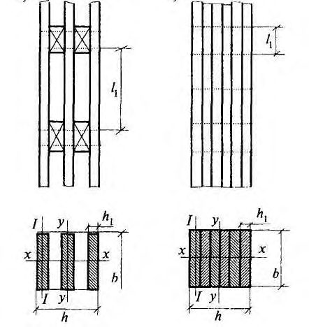
Рисунок 1 Ослабление сжатых элементов
где коэффициент а = 0,8 для древесины и а = 1,0 для LVL и фанеры; коэффициент А = 3000 для древесины и А = 2500 для фанеры и древесины из однонаправленного шпона.
при гибкости элемента λ > 70 где l 0 - расчетная длина элемента;
- r - радиус инерции сечения элемента с максимальными размерами брутто относительно осей х и y.
согласно 7.23.
где λу - гибкость всего элемента относительно оси у (рисунок 2), вычисленная по расчетной длине элемента l 0 без учета податливости; λ l гибкость отдельной ветви относительно оси I-I (рисунок 2), вычисленная по расчетной длине ветви l 1; при l 1 меньше семи толщин h l ветви принимаются с λl = 0; μу - коэффициент приведения гибкости, определяемый по формуле
где b и h - ширина и высота поперечного сечения элемента, см;
- n ш - расчетное число швов в элементе, определяемое числом швов, по которым суммируется взаимный сдвиг элементов (на рисунке 2, а -4 шва, на рисунке 2, б - 5 швов); l
0 - расчетная длина элемента, м;
- п с -расчетное число срезов связей в 1 шве на 1 м элемента (при нескольких швах с различным числом срезов следует принимать среднее для всех швов число срезов);
- k с -коэффициент податливости соединений, который следует определять по формулам таблицы 14.
Таблица 14
| Коэффициент k с | Коэффициент k с | |
|---|---|---|
| Вид связей | при центральном сжатии | сжатии с изгибом |
| 1 Гвозди, шурупы | 2 10 1 d | 2 5 1 d |
| 2 Стальные цилиндрические нагели: а) диаметром ≤ 1 / 7 толщины соединяемых элементов | 2 5 1 d | 2 2,5 1 d |
| б) диаметром > 1 / 7 толщины соединяемых элементов | ad 1,5 | ad 3 |
| 3 Вклеенные стержни из арматуры А400-А600 | 1 | 1 |
| 4 Дубовые цилиндрические нагели | 2 10 d | 2 5 d |
| 2 1 d | 2 1,5 d | |
| 5 Дубовые пластинчатые нагели | - | 1,4 |
| 6 Клей | 0 | 0 |
| Примечание - Диаметры гвоздей, шурупов, нагелей и вклеенных стержней d , толщина элементов а, ширина b пл и толщина δ пластинчатых нагелей должны быть выражены в сантиметрах. |
При определении k с диаметр гвоздей следует принимать не более 0,1 толщины соединяемых элементов. Если размер защемленных концов гвоздей менее 4 d , то срезы в примыкающих к ним швах в расчете не учитывают. Значение k с соединений на стальных цилиндрических нагелях следует определять по толщине а более тонкого из соединяемых элементов.
При определении k с диаметр дубовых цилиндрических нагелей следует принимать не более 0,25 толщины более тонкого из соединяемых элементов.
Связи в швах следует расставлять равномерно по длине элемента. В шарнирноопертых прямолинейных элементах допускается в средних четвертях длины ставить связи в половинном количестве, вводя в расчет по формуле (18) величину п с , принятую для крайних четвертей длины элемента.
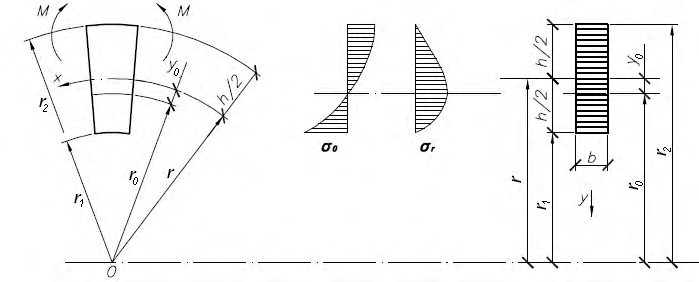
а - с прокладками; б - без прокладок
Рисунок 2 - Составные элементы
Гибкость составного элемента, вычисленную по формуле (17), следует принимать не более гибкости λ1 отдельных ветвей, рассчитываем по формуле
где Σ I i,бр -сумма моментов инерции брутто поперечных сечений отдельных ветвей относительно собственных осей, параллельных оси у (рисунок 2);
F бр -площадь сечения брутто элемента; l 1 -расчетная длина элемента.
Гибкость составного элемента относительно оси, проходящей через центры тяжести сечений всех ветвей (ось х на рисунке 2), следует определять как для цельного элемента, т.е. без учета податливости связей, если ветви нагружены равномерно. В случае неравномерно нагруженных ветвей следует руководствоваться 7.7.
Если ветви составного элемента имеют различное сечение, то расчетную гибкость λ1 ветви в формуле (17) следует принимать равной
определение l 1 приведено на рисунке 2.
где I о и I но - моменты инерции поперечных сечений соответственно опертых и неопертых ветвей.
где F макс - площадь поперечного сечения брутто с максимальными размерами; k ж N - коэффициент, учитывающий переменность высоты сечения, определяемый по таблице Г.2 приложения Г (для элементов постоянного сечения k ж N = 1); φ -коэффициент продольного изгиба, определяемый по 7.3 для гибкости, соответствующей сечению с максимальными размерами.
Изгибаемые элементы
где М -расчетный изгибающий момент;
R и расчетное сопротивление изгибу;
R и д.ш - расчетное сопротивление изгибу древесины из однонаправленного шпона;
W расч - расчетный момент сопротивления поперечного сечения элемента; для цельных элементов W расч = W нт.
Для изгибаемых составных элементов на податливых соединениях расчетный момент сопротивления следует принимать равным моменту сопротивления нетто W нт, умноженному на коэффициент kw ; значения kw для элементов, составленных из одинаковых слоев, приведены в таблице 15. При определении W нт ослабления сечений, расположенные на участке элемента длиной не более 200 мм, принимают совмещенными в одном сечении.
Таблица 15
| Коэффициент | Число слоев в элементе | Значение коэффициента для расчета изгибаемых составных элементов при пролетах, м | Значение коэффициента для расчета изгибаемых составных элементов при пролетах, м | Значение коэффициента для расчета изгибаемых составных элементов при пролетах, м | Значение коэффициента для расчета изгибаемых составных элементов при пролетах, м |
|---|---|---|---|---|---|
| Коэффициент | Число слоев в элементе | 2 | 4 | 6 | 9 и более |
| k w | 2 | 0,7 | 0,85 | 0,9 | 0,9 0,9 |
| k w | 3 | 0,6 | 0,8 | 0,85 | |
| k w | 10 | 0,4 | 0,7 | 0,8 | 0,85 |
| k ж | 2 | 0,45 | 0,65 0,5 | 0,75 0,6 | 0,8 0,7 |
| k ж | 3 | 0,25 | |||
| k ж | 10 | 0,07 | 0,2 | 0,3 | 0,4 |
Примечания
1 Для промежуточных значений величины пролета и числа слоев коэффициенты определяются интерполяцией.
2 Для составных балок на наклонно вклеенных связях при числе слоев не более 4 независимо от пролета, следует принимать kw = 0,95, k ж = 0,9.
где Q -расчетная поперечная сила;
S´ бр - статический момент брутто сдвигаемой части поперечного сечения элемента относительно нейтральной оси;
I бр - момент инерции брутто поперечного сечения элемента относительно нейтральной оси; b рас -расчетная ширина сечения элемента;
R ск - расчетное сопротивление скалыванию при изгибе;
R ск д.ш - расчетное сопротивление скалыванию при изгибе древесины из однонаправленного шпона.
где М А , М В -изгибающие моменты в начальном А и конечном В сечениях рассматриваемого участка;
Т -расчетная несущая способность связи в данном шве.
Примечание - При наличии в шве связей разной несущей способности, но одинаковых по характеру работы (например, нагелей и гвоздей), их несущие способности следует суммировать.
где Мх и Му - составляющие расчетного изгибающего момента для главных осей сечения х и у ;
Wx и Wy - моменты сопротивлений поперечного сечения нетто относительно главных осей сечения х и у.
- а) по тангенциальным нормальным напряжениям на внутренней и внешней кромках бруса:
где σ , н, σ , в - соответственно тангенциальные нормальные напряжения на внутренней и внешней кромках бруса;
М - расчетный изгибающий момент; r, r 0 , r 1 и r 2 - соответственно радиусы кривизны геометрической оси, нейтрального слоя, нижней (ближней к центру кривизны) и верхней кромок бруса;
F - площадь поперечного сечения кривого бруса; у 0 = I / ( Fr ) - смещение нейтрального слоя от геометрической оси криволинейного участка; I - момент инерции поперечного сечения кривого бруса;
R и - расчетное сопротивление древесины изгибу;
- б) по максимальным радиальным нормальным напряжениям
где R p90 - расчетное сопротивление ДК растяжению поперек волокон (пункт 7 таблицы 4).
Рисунок 3 - Расчетная схема кривого бруса при чистом изгибе
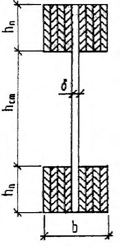
При невыполнении условия по формуле (29) допускается выполнять усиление постановкой вклеенных или ввинченных стержней, рассчитанных на восприятие растягивающего усилия, определяемого по формуле
где l 2 - длина хорды криволинейного участка, на котором не выполняется условие по формуле (29).
где М - максимальный изгибающий момент на рассматриваемом участке l р;
W бр - максимальный момент сопротивления брутто на рассматриваемом участке l р.
Коэффициент φ М для изгибаемых элементов прямоугольного постоянного поперечного сечения, шарнирно закрепленных от смещения из плоскости изгиба и закрепленных от поворота вокруг продольной оси в опорных сечениях, следует вычислять по формуле
где l р - расстояние между опорными сечениями элемента, а при закреплении сжатой кромки элемента в промежуточных точках от смещения из плоскости изгиба - расстояние между этими точками; b - ширина поперечного сечения; h -максимальная высота поперечного сечения на участке l р; k ф - коэффициент, зависящий от формы эпюры изгибающих моментов на участке l р, определяемый по таблице Е.1 приложения Е.
При расчете изгибаемых элементов с линейно меняющейся по длине высотой и постоянной шириной поперечного сечения, не имеющих закреплений из плоскости по растянутой от момента М кромке, или при m < 4 коэффициент φ М по формуле (31) следует умножать на дополнительный коэффициент k ж М. Значения k ж М приведены в таблице Е.3 приложения Е; при m ≥ 4 k ж М = 1.
При подкреплении из плоскости изгиба в промежуточных точках растянутой кромки элемента на участке l р коэффициент φ М , вычисляемый по формуле (31), следует умножать на коэффициент k п М
Примечания
1 Для шарнирно-опертых сжато-изгибаемых и внецентренно сжатых элементов при симметричных эпюрах изгибающих моментов синусоидального, параболического, полигонального и близких к ним очертаний, а также для консольных элементов М Д допускается выполнять по формуле
где ξ - коэффициент, изменяющийся от 1 до 0, учитывающий дополнительный момент от продольной силы
где р - центральный угол в радианах, определяющий участок l р элемента кругового очертания (для прямолинейных элементов р = 0); т - число подкрепленных (с одинаковым шагом) точек растянутой кромки на участке
где b - ширина сжатого пояса поперечного сечения.
Расчет следует выполнять по формуле
где φ - коэффициент продольного изгиба из плоскости изгиба сжатого пояса элемента, определяемый по 7.3;
R c - расчетное сопротивление сжатию;
R с д.ш - расчетное сопротивление сжатию древесины из однонаправленного шпона LVL;
W бp -момент сопротивления брутто поперечного сечения; в случае фанерных стенок приведенный момент сопротивления в плоскости изгиба элемента.
Элементы, подверженные действию осевой силы с изгибом
где М Д -изгибающий момент от действия поперечных и продольных нагрузок, определяемый из расчета по деформированной схеме;
W расч - расчетный момент сопротивления поперечного сечения (см. 7.9);
F расч - площадь расчетного сечения нетто.
Для древесины из однонаправленного шпона в формуле (30) следует использовать соответствующие значения расчетных сопротивлений.
Допускается в расчете вместо М Д использовать М - изгибающий момент в расчетном сечении без учета дополнительного момента от продольной силы.
вследствие прогиба элемента, рассчитываемый по формуле
М - изгибающий момент в расчетном сечении без учета дополнительного момента от продольной силы; φ - коэффициент, рассчитываемый по формуле (14);
R c - расчетное сопротивление сжатию вдоль волокон древесины или древесины из однонаправленного шпона.
- 2 В тех случаях, когда в шарнирно-опертых элементах эпюры изгибающих моментов имеют треугольное или прямоугольное очертание, коэффициент по формуле (38) следует умножать на поправочный коэффициент k н.
где н - коэффициент, который следует принимать равным 1,22 при эпюрах изгибающих моментов треугольного очертания (от сосредоточенной силы) и 0,81 - при эпюрах прямоугольного очертания (от постоянного изгибающего момента).
- 3 При несимметричном загружении шарнирно-опертых элементов величину изгибающего момента М Д допускается определять по формуле
где М с и М к - изгибающие моменты в расчетном сечении элемента от симметричной и кососимметричной составляющих нагрузки; ξс и ξк - коэффициенты, рассчитываемые по формуле (38) при величине гибкости, соответствующей симметричной и кососимметричной формам продольного изгиба.
- 4 Для элементов, переменных по высоте сечения, площадь F бр в формуле (38) следует принимать для максимального по высоте сечения, а коэффициент φ - умножать на коэффициент k ж N , принимаемый по таблице Е.2 приложения Е.
- 5 При отношении напряжений от изгиба к напряжениям от сжатия менее 0,1, сжато-изгибаемые элементы следует проверять также на устойчивость по формуле (12) без учета изгибающего момента.
где Q -расчетная поперечная сила;
N -расчетная продольная сила;
Sʹ бр - статический момент брутто сдвигаемой части поперечного сечения элемента относительно нейтральной оси;
I бр - момент инерции брутто поперечного сечения элемента относительно нейтральной оси;
b рас и h рас -расчетные ширина и высота сечения элемента; е - эксцентриситет передачи усилия N ;
R ск - расчетное сопротивление скалыванию при изгибе древесины или древесины из однонаправленного шпона.
- а) на сжатой кромке
- б) на растянутой кромке
где F бр - площадь брутто с максимальными размерами сечения элемента на участке l p; φ - коэффициент продольного изгиба, определяемый по формуле (14) для гибкости участка элемента c расчетной длиной l p из плоскости деформирования; φ М - коэффициент, определяемый по формуле (31); n = 2 - для элементов без закрепления растянутой зоны из плоскости деформирования и n = 1 для элементов, имеющих такие закрепления.
Для древесины из однонаправленного шпона следует принимать соответствующие значения расчетных сопротивлений по 6.3.
При наличии в элементе на участке l p закреплений из плоскости деформирования со стороны растянутой от момента М кромки, коэффициент φ М следует умножать на коэффициент k п М , рассчитываемый по формуле (32), а коэффициент φ - на коэффициент k п N пo формуле
где αр, l p, h , m - в соответствии с 6.14.
При расчете элементов переменного по высоте сечения, не имеющих закреплений из плоскости по растянутой от момента М кромке, или при m < 4 коэффициенты φ и φ М , рассчитываемые по формулам (14) и (31), следует дополнительно умножать соответственно на коэффициенты k ж N и k ж М , приведенные в таблицах Е.2 и Е.3 приложения Е.
При m ≥ 4 k ж N = k жМ = 1.
где F бр, W бр - площадь и момент сопротивления брутто поперечного сечения элемента; φ1 - коэффициент продольного изгиба для отдельной ветви, вычисленный по ее расчетной длине l 1 (см. 7.6).
Устойчивость сжато-изгибаемого составного элемента из плоскости изгиба следует проверять по формуле (12) без учета изгибающего момента.
где М Д - изгибающий момент, определяемый по 7.17;
S' бр - статический момент брутто сдвигаемой части поперечного сечения относительно нейтральной оси;
Т - расчетная несущая способность одной связи в данном шве;
I бр - момент инерции брутто поперечного сечения элемента.
Расчетные длины и предельные гибкости элементов деревянных конструкций
- при шарнирно-закрепленных концах, а также при шарнирном закреплении в промежуточных точках элемента - 1;
- одном шарнирно-закрепленном и другом защемленном конце - 0,8;
- одном защемленном и другом свободном нагруженном конце - 2,2;
- обоих защемленных концах - 0,65.
- В случае равномерно распределенной по длине элемента продольной нагрузки коэффициент μ0 следует принимать равным:
- при обоих шарнирно-закрепленных концах - 0,73;
- одном защемленном и другом свободном конце - 1,2.
Расчетную длину пересекающихся элементов, соединенных между собой в месте пересечения, следует принимать равной:
- при проверке устойчивости в плоскости конструкций - расстоянию от центра узла до точки пересечения элементов;
- проверке устойчивости из плоскости конструкции в случае пересечения:
- а) двух сжатых элементов - полной длине элемента;
- б) сжатого элемента с неработающим - величине l 1, умноженной на коэффициент μ0
где l 1, λ1, F 1 - полная длина, гибкость и площадь поперечного сечения сжатого элемента; l 2, λ2, F 2 - длина, гибкость и площадь поперечного сечения неработающего элемента.
Величину μ0 следует принимать не менее 0,5;
- в) сжатого элемента с элементом, растянутым равной по величине силой, -наибольшей длине сжатого элемента, измеряемой от центра узла до точки пересечения элементов.
Если пересекающиеся элементы имеют составное сечение, то в формулу (48) следует подставлять соответствующие значения гибкости, рассчитываемые по формуле (17).
Таблица 16
| Наименование элементов конструкций | Предельная гибкость λ макс |
|---|---|
| 1 Сжатые пояса, опорные раскосы и опорные стойки ферм, колонны | 120 |
| 2 Прочие сжатые элементы ферм и других сквозных конструкций | 150 |
| 3 Сжатые элементы связей | 200 |
| 4 Растянутые пояса ферм в вертикальной плоскости | 150 |
| 5 Прочие растянутые элементы ферм и других сквозных конструкций | 200 |
| Для опор воздушных линий электропередачи | |
| 6 Основные элементы (стойки, приставки, опорные раскосы) | 150 |
| 7 Прочие элементы | 175 |
| 8 Связи | 200 |
Примечание - Для сжатых элементов переменного сечения величина предельной гибкости λмакс умножается на N k ж , где коэффициент k ж N принимается по таблице Е.2 приложения Е.
Особенности расчета клееных элементов из фанеры с древесиной
СП 64.13330.2017
где М - расчетный изгибающий момент;
W пр - момент сопротивления поперечного сечения, приведенного к фанере, который следует рассчитывать в соответствии с 7.27; m ф - коэффициент, учитывающий снижение расчетного сопротивления в стыках фанерной обшивки, принимаемый равным при усовом соединении или с двусторонними накладками: m ф = 0,6 для фанеры обычной и m ф = 0,4 для фанеры бакелизированной; при отсутствии стыков m ф = 1;
R ф.р - расчетное сопротивление фанеры растяжению.
1 - продольные ребра; 2 - обшивка
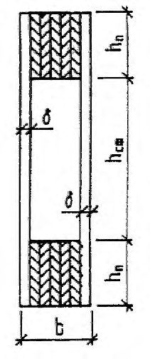
Рисунок 4 Поперечное сечение клееных плит из фанеры и древесины
где I пр - момент инерции сечения, приведенного к фанере; у 0 - расстояние от центра тяжести приведенного сечения до его нижней грани;
где I ф - момент инерции поперечного сечения фанерных обшивок;
I - момент инерции поперечного сечения деревянных ребер каркаса;
Е / Е ф - отношение модулей упругости древесины и фанеры.
При определении приведенных моментов инерции и приведенных моментов сопротивления расчетную ширину фанерных обшивок следует принимать равной b рас = 0,9 b при l ≥ 6 а и b рас = 0,15 bl/a при l < 6 а ( l - пролет плиты).
22 где h пл - высота поперечного сечения плиты или панели;
( с - расстояние между ребрами в свету; δ - толщина фанеры).
Верхнюю обшивку плит дополнительно следует проверять на местный изгиб от сосредоточенного груза Р = 1 кН (с коэффициентом перегрузки n = 1,2) как заделанную в местах приклеивания к ребрам пластинку.
где Q - расчетная поперечная сила;
Sʹ пр -статический момент сдвигаемой части приведенного сечения относительно нейтральной оси;
R ск - расчетное сопротивление скалыванию древесины вдоль волокон или фанеры вдоль волокон наружных слоев; b рас - расчетная ширина сечения, которую следует принимать равной суммарной ширине ребер каркаса.
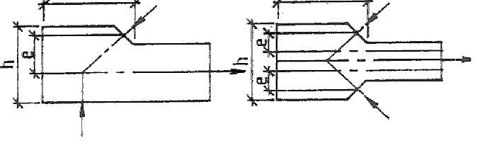
а - двутаврового сечения; б - коробчатого сечения
Рисунок 5 Поперечные сечения клееных балок с плоской фанерной стенкой
где Σδст - суммарная толщина стенок.
При проверке скалывания по швам между поясами и стенкой в формуле (53) значение
R ск принимают равным R ф.ск, а расчетную ширину сечения принимают равной
где п - число вертикальных швов; h п - высота поясов.
где σст - нормальное напряжение в стенке от изгиба на уровне внутренней кромки поясов; τст - касательные напряжения в стенке на уровне внутренней кромки поясов;
R ф.р. - расчетное сопротивление фанеры растяжению под углом , определяемое по графику рисунка Д.1 приложения Д;
- угол, определяемый из зависимости
Устойчивость стенки с продольным по отношению к оси элемента расположением волокон наружных слоев следует проверять на действие касательных и нормальных напряжений при условии
где h ст - высота стенки между внутренними гранями полок; δ - толщина стенки.
Расчет следует производить по формуле
где k и и k τ - коэффициенты, определяемые по графикам рисунков Д.2 и Д.3 приложения Д; h рас - расчетная высота стенки, которую следует принимать равной h ст при расстоянии между ребрами а ≥ h ст и равной а при а < h ст .
При поперечном по отношению к оси элемента расположении наружных волокон фанерной стенки проверку устойчивости следует производить по формуле (59) на действие только касательных напряжений в тех случаях, когда
Расчет элементов деревянных конструкций по предельным состояниям 2-й группы
24 Величину деформаций податливого соединения следует делить на коэффициенты условия работы m в, m д, m н и m с.с .
Таблица 17
| Вид соединения | Деформация соединения, мм |
|---|---|
| Соединение: | |
| - на лобовых врубках и торец в торец | 1,5 |
| - в примыканиях поперек волокон | 3 |
| - на нагелях всех видов | 2 |
| - на металлических зубчатых пластинах (МЗП) | 1,5 |
| - на стержнях, вклеенных перпендикулярно плоскости сплачивания | 1,5 |
| - на наклонно вклеенных стержнях | 0,5 |
| - в клеевых соединениях | 0 |
Наибольший прогиб шарнирно-опертых и консольных изгибаемых элементов постоянного и переменного сечений f следует определять по формуле
где f 0 - прогиб балки постоянного сечения высотой h без учета деформаций сдвига; k - коэффициент, учитывающий влияние переменности высоты сечения, принимаемый равным 1 для балок постоянного сечения;
- с - коэффициент, учитывающий влияние деформаций сдвига от поперечной силы; h - наибольшая высота сечения; l - пролет балки.
Значения коэффициентов k и с для основных расчетных схем балок приведены в таблице Е.4 приложения Е.
где f - прогиб, определяемый по формуле (61); ξ - коэффициент, определяемый по формуле (38).
8Расчет соединений элементов деревянных конструкций
Общие указания
- а) из условия смятия древесины
СП 64.13330.2017
- б) из условия скалывания древесины
где F см - расчетная площадь смятия;
F ск - расчетная площадь скалывания;
R смα - расчетное сопротивление древесины или LVL смятию под углом α к направлению волокон;
- R ср ск - расчетное среднее по площадке скалывания сопротивление древесины или LVL скалыванию вдоль волокон, определяемое в 8.3.
где R ск -расчетное сопротивление скалыванию вдоль волокон (при расчете по максимальному напряжению), определяемое по 6.1, 6.2 или 6.3;
- β - коэффициент, принимаемый равным 0,25 при расчете соединений, работающих по схеме, показанной на рисунке 6, г , и β = 0,125 при расчете соединений, работающих по схеме согласно рисунку 6, в , если обеспечено обжатие по плоскостям скалывания;
- l ск - расчетная длина плоскости скалывания, принимаемая не более 10-кратной глубины врезки в элемент;
- е - плечо сил скалывания, принимаемое равным 0,5 h при расчете элементов с несимметричной врезкой в соединениях без зазора между элементами (рисунок 6, а ) и 0,25 h при расчете симметрично загруженных элементов с симметричной врезкой (рисунок 6, б ); ( h - полная высота поперечного сечения элемента);
Отношение l ск / е должно быть не менее 3.
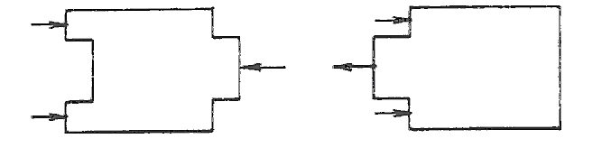
в г
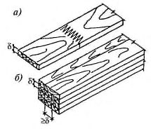
а - несимметричная; б - симметричная; в, г - схемы скалывания в соединениях
Рисунок 6 Врезки в элементах соединений
Клеевые соединения
- а) для стыкования отдельных слоев на зубчатом соединении (рисунок 7, а );
- б) образования сплошного сечения (пакетов) путем сплачивания слоев по высоте и ширине сечения. При этом по ширине пакета швы склеиваемых кромок в соседних слоях следует сдвигать не менее чем на толщину слоя δ по отношению друг к другу (рисунок 7, б ). Для конструкций 1 и 2а классов функциональной ответственности (приложение А) зубчатые шипы не должны совпадать более чем в 25 % слоев в одном сечении пакета, а для изгибаемых, растянуто-изогнутых и сжато-изогнутых элементов не более чем в 25 % слоев в растянутой зоне сечения, при этом за одно сечение принимается участок длиной 10 толщин слоя;
- в) соединений на вклеенных стержнях.
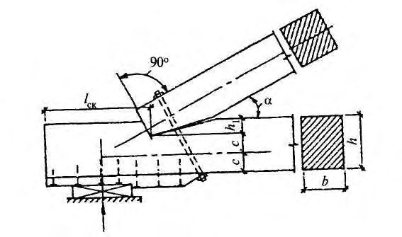
а при стыковании отдельных слоев по длине зубчатым шипом, выходящим на пласть; б при образовании пакетов и сплачивании по пласти и кромке
Рисунок 7 Клеевые соединения
Примечание - Соединения на вклеенных стержнях рассмотрены в 8.34-8.55.
Соединения на врубках
Рабочая плоскость смятия во врубках при соединении элементов, не испытывающих поперечного изгиба, должна быть расположена перпендикулярно оси примыкающего сжатого элемента. Если примыкающий элемент помимо сжатия испытывает поперечный изгиб, рабочую плоскость смятия во врубках следует располагать перпендикулярно равнодействующей осевой и поперечной сил.
Элементы, соединяемые на лобовых врубках, должны быть стянуты болтами.
Рисунок 8 - Лобовая врубка с одним зубом
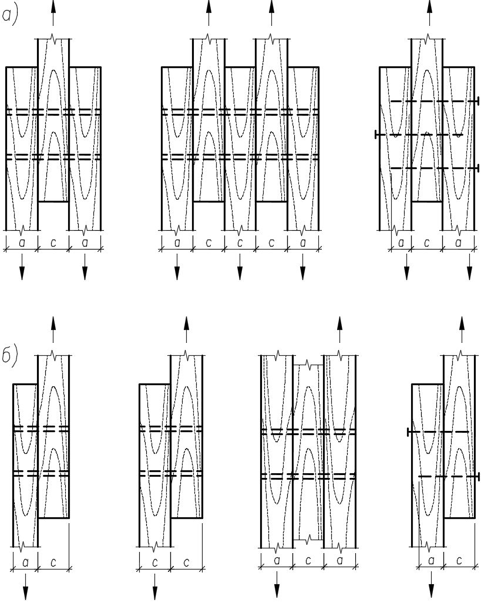
Глубину врубки следует принимать не более ¼ h в промежуточных узлах сквозных конструкций и не более 1 /3 h в остальных случаях, при этом глубина врубок h 1 в брусьях должна быть не менее 2 см, а в круглых лесоматериалах - не менее 3 см.
Расчетное сопротивление древесины смятию под углом к волокнам для лобовых врубок следует определять по формуле (5), независимо от размеров площади смятия.
Соединения на цилиндрических нагелях
Расчетную несущую способность цилиндрического нагеля на один шов сплачивания в соединениях элементов из сосны и ели, в том числе клееных, и древесины из однонаправленного шпона (рисунок 9) при направлении усилий, передаваемых нагелями вдоль волокон, гвоздями под любым углом и стальными нагелями, установленными в торец клееных деревянных элементов, следует определять по таблице 18. В необходимых случаях расчетную несущую способность цилиндрического нагеля, определенную по таблице 18, следует устанавливать с учетом указаний 8.16.
Рисунок 9 - Виды соединений по конструктивному сочетанию нагелей и соединяемых деревянных элементов

| Схема соединений | Напряженное состояние соединения | Расчетная несущая способность Т на один шов сплачивания (условный срез), кН | Расчетная несущая способность Т на один шов сплачивания (условный срез), кН |
|---|---|---|---|
| гвоздя, стального, алюминиевого, стеклопластикового нагеля | дубового нагеля | ||
| 1 Симметричные соединения | а) Смятие в средних элементах | 0,5 cd | 0,3 cd |
| (рисунок 9, а ) | б) Смятие в крайних элементах | 0,8 аd | 0,5 аd |
| 2 Несимметричные соединения (рисунок 9, б ) | а) Смятие во всех элементах равной толщины, а также в более толстых элементах односрезных соединений б) Смятие в более толстых средних элементах двухсрезных | 0,55 cd | 0,3 cd |
| 2 Несимметричные соединения (рисунок 9, б ) | соединений при а ≤ 0,5 с | 0,4 cd | 0,2 cd |
| 2 Несимметричные соединения (рисунок 9, б ) | в) Смятие в более тонких крайних элементах при а ≤ 0,35 с | 1,2 ad | 0,75 ad |
| 2 Несимметричные соединения (рисунок 9, б ) | г) Смятие в более тонких элементах односрезных соединений и в крайних элементах при с > а > 0,35 с | 1,5k н ad | 1,5k н ad |
| 3 Симметричные и несимметричные соединения | а) Изгиб гвоздя б) Изгиб нагеля из стали | 3,1 d 2 +0,012 a 2 , но не более 5 d 2 2,2 d 2 +0,025 a 2 , | - - |
| 3 Симметричные и несимметричные соединения | С235 и арматуры А240 ( R и = 440 МПа) | но не более 3,1 d 2 | |
| 3 Симметричные и несимметричные соединения | в) Изгиб нагеля из алюминиевого сплава Д16-Т | 2 d 2 +0,025 a 2 , но не более 2,2 d 2 1,8 d 2 +0,025 a 2 , 2 | - - |
| 3 Симметричные и несимметричные соединения | г) Изгиб нагеля из стеклопластика АГ-4С д) Изгиб нагеля из древесно- слоистого пластика ДСПБ | но не более 2,2 d d 2 +0,025 a 2 , но не более 1,5 d 2 | - 2 |
| 3 Симметричные и несимметричные соединения | е) Изгиб дубового нагеля | 0,55 d + +0,025 a 2 , но не более 0,8 d 2 | |
| 3 Симметричные и несимметричные соединения | - | ||
| 4 Торцевые соединения с металлической накладкой с жестким креплением нагелей (рисунок | Изгиб нагеля из стали С235 и арматуры А240 ( R и = 440 МПа) | 2 d 2 | - |
Примечания
1 В таблице: с - толщина средних элементов, а также равных по толщине или более толстых элементов односрезных соединений, а - толщина крайних элементов, а также более тонких элементов односрезных соединений; d - диаметр нагеля; все размеры приведены в сантиметрах.
2 Расчетную несущую способность нагеля в двухсрезных несимметричных соединениях при неодинаковой толщине элементов следует определять с учетом следующего: а) расчетную несущую способность нагеля из условия смятия в среднем элементе толщиной с при промежуточных значениях а между с и 0,5 с следует определять интерполяцией между значениями по пункту 2,а и 2,б настоящей таблицы;
- б) при толщине крайних элементов а > с расчетную несущую способность нагеля следует определять из условия смятия в крайних элементах по пункту 2,а настоящей таблицы с заменой с на а ;
- в) при определении расчетной несущей способности из условий изгиба нагеля толщину крайнего элемента а в пункте 3 таблицы следует принимать не более 0,6 с .
- 3 Значения коэффициента k н для определения расчетной несущей способности при смятии в более тонких элементах односрезных соединении при с ≥ а ≥ 0,35 с приведены в таблице 20.
- 4 Расчетную несущую способность нагеля в рассматриваемом шве следует принимать равной меньшему из всех значений, полученных по формулам данной таблицы.
- 5 Расчет нагельных соединений на скалывание производить не следует, если выполнены условия расстановки нагелей в соответствии с 6.18 и 6.22.
- 6 Диаметр нагеля d следует назначать из условия наиболее полного использования его несущей способности по изгибу.
- 7 Число нагелей п н в соединении следует определять по формуле
где N - расчетное усилие;
- Т - наименьшая расчетная несущая способность, найденная по формулам настоящей таблицы; n ш - число расчетных швов одного нагеля.
8 В соединениях число нагелей должно быть не менее 2. Исключение составляют нагели, устанавливаемые конструктивно (например, на период сборки и монтажа).
- 9 Для гвоздей, установленных в предварительно рассверленные отверстия диаметром, равным диаметру гвоздя, несущая способность по изгибу определяется как для нагеля из стали С235.
- а) на коэффициент k (таблица 19) при расчете на смятие древесины в нагельном гнезде (для нагеля, работающего в торце, расчет не выполняют);
- б) величину k при расчете нагеля на изгиб; угол следует принимать равным большему из углов смятия нагелем элементов, прилегающих к рассматриваемому шву (кроме нагеля, работающего в торце);
- в) величину 0,6 k при расчете нагеля на изгиб, работающего в торце деревянного элемента.
Таблица 19
| Коэффициент k α | Коэффициент k α | Коэффициент k α | Коэффициент k α | Коэффициент k α | |
|---|---|---|---|---|---|
| Угол, град | для стальных, алюминиевых и стеклопластиковых нагелей диаметром, мм | для стальных, алюминиевых и стеклопластиковых нагелей диаметром, мм | для стальных, алюминиевых и стеклопластиковых нагелей диаметром, мм | для стальных, алюминиевых и стеклопластиковых нагелей диаметром, мм | для дубовых нагелей |
| 12 | 16 | 20 | 24 | ||
| 30 | 0,95 | 0,9 | 0,9 | 0,9 | 1 |
| 60 | 0,75 | 0,7 | 0,65 | 0,6 | 0,8 |
| 90 | 0,7 | 0,65 | 0,55 | 0,5 | 0,7 |
Примечания
1 Значение k α для промежуточных углов определяется интерполяцией.
2 При расчете односрезных соединений для более толстых элементов, работающих на смятие под углом, значение k α следует умножать на дополнительный коэффициент 0,9 при с / а < 1,5 и на 0,75 при с / а > 1,5.
Таблица 20
| Значение коэффициента k н для односрезных соединений при а / с | Значение коэффициента k н для односрезных соединений при а / с | Значение коэффициента k н для односрезных соединений при а / с | Значение коэффициента k н для односрезных соединений при а / с | Значение коэффициента k н для односрезных соединений при а / с | Значение коэффициента k н для односрезных соединений при а / с | Значение коэффициента k н для односрезных соединений при а / с | |
|---|---|---|---|---|---|---|---|
| Вид нагеля | 0,35 | 0,5 | 0,6 | 0,7 | 0,8 | 0,9 | 1 |
| Гвоздь, стальной, | 0,8 | 0,58 | 0,48 | 0,43 | 0,39 | 0,37 | 0,35 |
| стеклопластиковый нагель Дубовый нагель | 0,5 | 0,5 | 0,44 | 0,38 | 0,32 | 0,26 | 0,2 |
Силу, растягивающую деревянный элемент поперек волокон (рисунок 10, а ), следует учитывать следующим образом:
где
𝐹 р = maх{
𝐹р,1
𝐹р,2
,
F р,1 и F р,2 - сдвигающие усилия с каждой стороны от соединения;
F ск.н,90 р - расчетная несущая способность древесины раскалыванию поперек волокон под воздействием нагельного соединения, Н, которую следует вычислять по формуле
где F ск.н,90 н - нормативная прочности материала, определенная с обеспеченностью 0,95, Н; m дл - коэффициент длительной прочности, соответствующий режиму длительности загружения (таблица 4);
Π mi - произведение коэффициентов условий работы (6.9);
- γ m - коэффициент надежности по материалу, определяемый из условия перехода от обеспеченности 0,95 для F ск.н,90 н к обеспеченности 0,99 для F ск.н,90 р по формуле (3).
Нормативную несущую способность древесины раскалыванию поперек волокон под воздействием нагельного соединения следует вычислять по формуле
где F ск.н,90 - нормативная несущая способность древесины раскалыванию поперек волокон под воздействием нагельного соединения в середине пролета, для торцевых соединений и на краю консольной балки следует принимать с коэффициентом 0,5, Н;
- w - коэффициент, который следует принимать равным:
- а) для соединений со стальными накладками с жестким креплением нагелей 1,4,
- б) для остальных нагельных соединений - 1;
- b - ширина деревянного элемента, мм;
- he - расстояние от центра наиболее удаленного от края деревянного элемента нагеля до кромки деревянного элемента, мм;
- h - высота деревянного элемента, мм.
При he ≥ 0,7 h растягивающее усилие учитывать не требуется, прочность соединения определена несущей способностью нагелей.
Для торцевых соединений следует выполнять дополнительную проверку на раскалывание, принимая he = he ,1 (рисунок 10, б ). а с направлением передаваемого нагелем усилия под углом к волокнам; б торцевое

Рисунок 10 - Схемы нагельных соединений для расчетов на раскалывание
- а) при расчете нагельного соединения из условия смятия древесины в нагельном гнезде и раскалывания умножением на коэффициенты m в, m т, m д, m н, , m а и m с.с ;
- б) при расчете нагельного соединения из условия изгиба нагеля умножением на квадратные корни из этих коэффициентов и на коэффициент m и (8.17).
где R и - расчетное сопротивление стали растяжению по временному сопротивлению, МПа. 8.18 Нагельное соединение со стальными накладками и прокладками на болтах или глухих цилиндрических нагелях (рисунки 11, 12) допускается применять в тех случаях, когда обеспечена необходимая плотность постановки нагелей.
Глухие стальные цилиндрические нагели должны иметь заглубление в древесину не менее 5 диаметров нагеля и не менее 12,5 диаметров нагеля при установке в торец. В последнем случае диаметр отверстия должен быть на 0,5 мм менее диаметра нагеля.
Нагельные соединения со стальными накладками и прокладками следует рассчитывать согласно указаниям 8.13-8.15, причем в расчете из условия изгиба (пункт 3 таблицы 19) следует принимать наибольшее значение несущей способности нагеля.
Стальные накладки и прокладки следует проверять на растяжение по ослабленному сечению и на смятие под нагелем в соответствии с указаниями СП 16.13330.
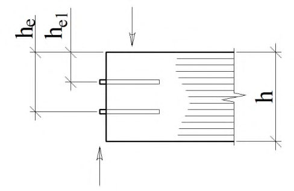
а - на болтах и шпильках; б - на глухих цилиндрических нагелях; в - на глухих цилиндрических нагелях, установленных в торец клееного элемента
Рисунок 11 - Нагельные соединения с накладками а б а - на нагелях; б - на нагелях и шпильках
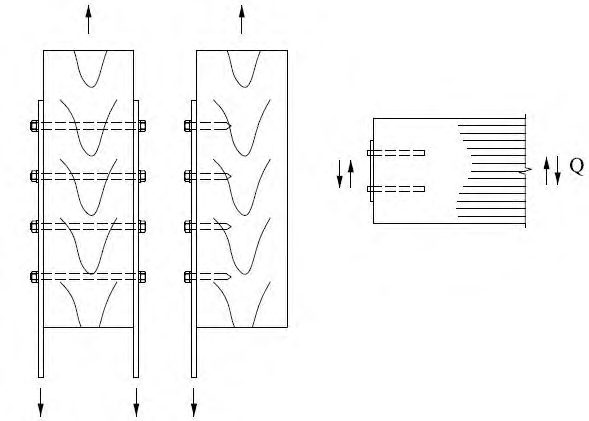
Рисунок 12 - Нагельные соединения с прокладками
- для стальных нагелей S 1 = 7 d ; S 2 = 3,5 d ; S 3 = 3 d ;
- алюминиевых и стеклопластиковых нагелей S 1 = 6 d ; S 2 = 3,5 d ; S 3 = 3 d ;
- дубовых нагелей S 1 = 5 d ; S 2 = 3 d ; S 3 = 2,5 d .
При толщине пакета b менее 10 d (рисунок 12) и для клееных элементов, включая LVL, с расположением нагелей перпендикулярно клеевым швам следует принимать:
- для стальных, алюминиевых и стеклопластиковых нагелей S 1 = 6 d ; S 2 = 3 d ; S 3 = 2,5 d ;
- дубовых нагелей S 1 = 4 d ; S 2 = S 3 = 2,5 d .
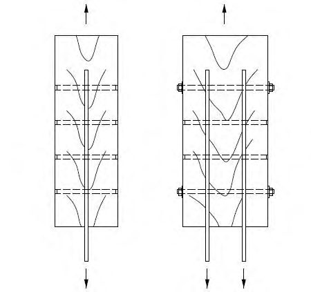
Рисунок 13 - Расстановка нагелей
Если расчетная длина защемления конца гвоздя получается менее 4 d , его работу в примыкающем к нему шве учитывать не следует.
При свободном выходе гвоздя из пакета расчетную толщину последнего элемента следует уменьшать на 1,5 d (рисунок 14).
Диаметр гвоздей следует принимать не более 0,25 толщины пробиваемых элементов.
Рисунок 14 - Определение расчетной длины защемления конца гвоздя
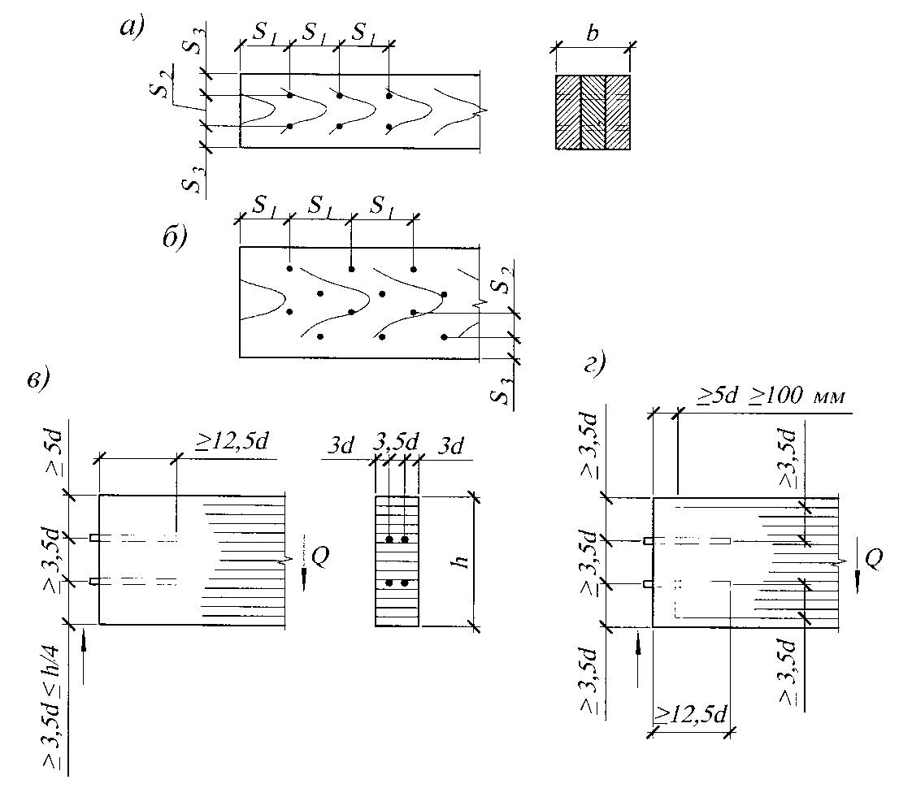
- S 1 = 15 d - при толщине пробиваемого элемента с ≥ 10 d ;
- S 1 = 25 d - при толщине пробиваемого элемента с = 4 d .
Для промежуточных значений толщины с наименьшее расстояние следует определять по интерполяции.
Для элементов, не пробиваемых гвоздями насквозь, независимо от их толщины, расстояние между осями гвоздей следует принимать равным S 1 ≥ 15 d .
Расстояние вдоль волокон древесины от гвоздя до торца элемента во всех случаях следует принимать не менее S 1 = 15 d .
Расстояние между осями гвоздей поперек волокон древесины при прямой расстановке гвоздей следует принимать не менее S 2 = 4 d ; при шахматной расстановке или расстановке их косыми рядами под углом а ≤ 45° (рисунок 15) расстояние может быть уменьшено до 3 d .
Рисунок 15 - Расстановка гвоздей косыми рядами
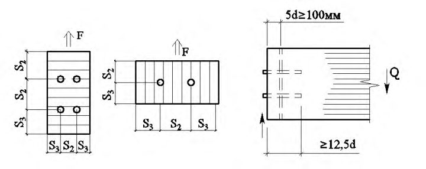
Гвозди, забитые в предварительно рассверленные отверстия диаметром, равным диаметру гвоздя, рассчитывают как нагели; минимальные расстояния меду осями гвоздей принимаются как для нагелей.
Соединения на гвоздях и шурупах, работающих на выдергивание
Не допускается учитывать работу на выдергивание гвоздей, забитых в заранее просверленные отверстия, забитых в торец (вдоль волокон), а также при динамических воздействиях на конструкцию.
где R в.г - расчетное сопротивление выдергиванию на единицу поверхности контакта гвоздя с древесиной, которое следует принимать для воздушно-сухой древесины равным 0,3 МПа, а для сырой, высыхающей в конструкции, - 0,1 МПа; d - диаметр гвоздя, м; l 1 - расчетная длина защемленной, сопротивляющейся выдергиванию части гвоздя, м, определяемая согласно 8.24; m дл и Π mi - в соответствии с 6.1.
Расстояние S 3 от крайнего ряда гвоздей до продольной кромки элемента следует принимать не менее 4 d .
Примечания
1 Расстояние между гвоздями вдоль волокон древесины в элементах из осины, ольхи и тополя следует увеличивать на 50 % по сравнению с указанными выше.
- 2 В условиях повышенной влажности или температуры, а также при расчете на действие кратковременной или постоянной и длительной временной нагрузок расчетное сопротивление выдергиванию для воздушно-сухой древесины следует умножать на коэффициенты, приведенные в таблице 9.
3 При диаметре гвоздей более 5 мм в расчет вводят диаметр, равный 5 мм.
Расстановку гвоздей, работающих на выдергивание, следует производить по правилам расстановки гвоздей, работающих на сдвиг (8.25). При наклонной забивке расстояние до нагруженной кромки должно быть не менее 10 d (рисунок 16).
Рисунок 16 Наклонная забивка гвоздей
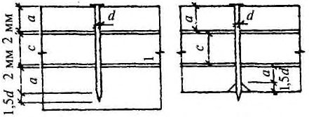
где R в.ш - расчетное сопротивление выдергиванию шурупа или глухаря на единицу поверхности соприкасания нарезной части шурупа с древесиной, которое следует принимать для воздушно-сухой древесины равным 1 МПа; расчетное сопротивление выдергиванию следует умножать в соответствующих случаях на коэффициенты, приведенные в 6.9 и таблице 4; d - наружный диаметр нарезной части шурупа, м; l 1 - длина нарезной части шурупа, сопротивляющаяся выдергиванию, м (см). Расстояние между осями шурупов должно быть не менее: S 1 = 5 d ; S 2 = S 3 = 4 d (рисунок 13); m дл и Π mi - в соответствии с 6.1.
Соединения на пластинчатых нагелях
Сплачивание по высоте сечения более трех элементов, а также применение элементов, срощенных по длине, не допускается. а
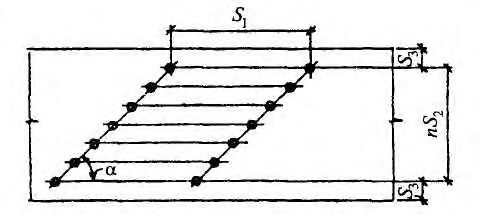
б
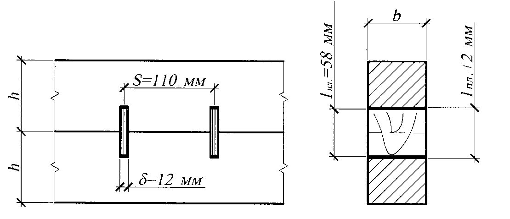
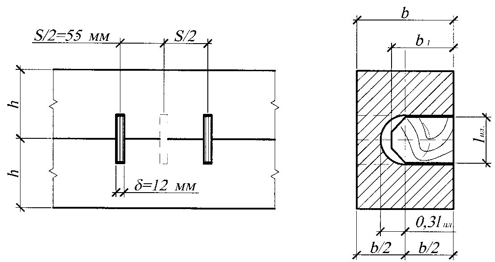
а - со сквозными пластинками; б - с глухими пластинками
Рисунок 17 - Соединение на пластинчатых нагелях
где b пл - ширина пластинчатого нагеля, см, которую следует принимать равной ширине сплачиваемых элементов b пл = b при сквозных пластинках и b пл = 0,5 b при глухих; m дл и Π mi - в соответствии с 6.1.
В случаях применения для сплачивания элементов из других древесных пород следует вводить поправочный коэффициент по таблице 3 (для скалывающих напряжений).
Для конструкций в условиях повышенной влажности или температуры, рассчитываемых на действие кратковременных или постоянной и длительной временной нагрузок, расчетную несущую способность пластинчатого нагеля следует умножать на поправочные коэффициенты по таблицам 7, 8 и 6.9, б , в .
Соединения на вклеенных стержнях
Общие требования к соединениям на вклеенных стержнях
- для устройства узловых сопряжений элементов плоских и пространственных конструкций (опорных узлов, поясов и решетки в фермах, ключевых шарниров в арках, рамах и т. п.);
- устройства жестких равнопрочных стыков сборных изгибаемых, растянутых, сжатоизгибаемых, растянуто-изгибаемых элементов (балок, арок, ферм, рам, защемленных стоек, жестких нитей, куполов, сводов и т. п.);
- анкеровки закладных деталей, воспринимающих усилия разных направлений;
- восприятия нормальных сжимающих усилий поперек и под углом к волокнам в опорных зонах и местах приложения сосредоточенных нагрузок;
- узловых соединений, воспринимающих сдвиг;
- локализации главных растягивающих напряжений в приопорных зонах клееных деревянных конструкций и в окрестностях больших сосредоточенных нагрузок;
- увеличения несущей способности участков конструкций, в которых действуют нормальные растягивающие напряжения поперек волокон и касательные напряжения (в приопорных зонах высоких балок, в зонах глубоких подрезок или ослаблений врезками, в изгибаемых элементах с криволинейной осью и др.);
- сплачивания КДК, поперечное сечение которых состоит из 2 и более элементов;
- в виде наклонно вклеенных стержней в качестве связей сдвига составных ДК, в том числе для комбинированных конструкций с деревянными балками в виде ребер и монолитной железобетонной плитой;
- для поперечного и наклонного армирования КДК с целью повышения их сдвиговой прочности и надежности, в том числе при переменном температурно-влажностном режиме эксплуатации;
- наклонного армирования с целью повышения сдвиговой выносливости.
Принципиальные конструктивные схемы соединений в узлах и стыках элементов для различных напряженно-деформированных состояний приведены на рисунке 18.
Стержни, вклеенные под углом к волокну менее чем 20º, рассматривают как вклеенные вдоль волокон, под углом 20º и более - как вклеенные под углом к волокнам. Вклеенные поперек волокон стержни являются частным случаем стержней, вклеенных под углом к волокнам.
А - опорная реакция от расчетной нагрузки; а - в виде связей составных элементов; б - для повышения сдвиговой прочности клееной балки; в - для анкеровки закладных деталей; г, д - в опорных и других узлах конструкций; е - схема симметричного универсального жесткого стыка элементов сечением < 500 и > 600; ж - для растянутых элементов; з - для сжатых стыков с полимербетоном; и - для полигональных элементов, несимметричная схема (карниз рамы); к - для узла защемления стоек
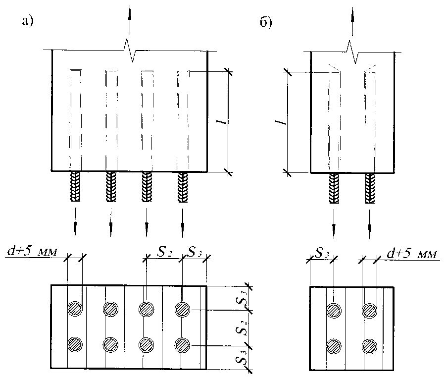
Рисунок 18 - Примеры соединений на наклонно вклеенных стержнях
Возможность использования других марок клея и видов наполнителя для вклеивания стержней должна быть обоснована соответствующими испытаниями с определением физико-механических характеристик и технологичности.
Вклеивание стержней и контроль качества следует производить в соответствии с приложением Ж.
Соединения на стержнях, вклеенных вдоль волокон
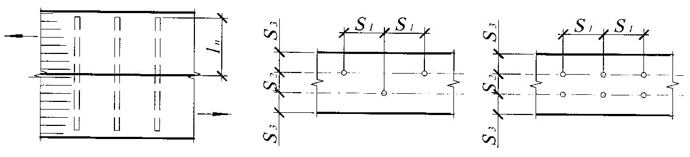
а - в цилиндрические отверстия; б - в профрезерованные пазы
Рисунок 19 - Соединения на стержнях из арматуры периодического профиля, вклеенных вдоль волокон
где R ск - расчетное сопротивление древесины скалыванию, МПа, определяемое по пункту 5, г таблицы 3; d 1 - диаметр отверстия, м; l - длина заделываемой части стержня, м (см), которую следует принимать по расчету, но не менее 10 d и не более 30 d ; k c -коэффициент, учитывающий неравномерность распределения напряжений сдвига в зависимости от длины заделываемой части стержня, который следует определять по формуле
m дл и Π mi - в соответствии с 6.1;
Соединения на стержнях, вклеенных под углом к волокнам
где R А -расчетное сопротивление древесины выдергиванию или продавливанию вклеенного стержня, МПа, принимаемое равным 6,8 МПа; d 1 - диаметр отверстия, м; l p - расчетная длина стержня, м
l - длина заделываемой части, м; l о = 3 d - глубина возможного снижения прочности клеевой прослойки при сварке; для стержней без сварки l о = 0; d - диаметр вклеиваемого стержня, м; k c - коэффициент, учитывающий неравномерность распределения напряжений сдвига в зависимости от длины заделываемой части стержня, который следует определять по формуле
k Π -коэффициент, зависящий от знака нормальных напряжений вдоль волокон в зоне установки стержней; md - коэффициент, учитывающий зависимость расчетного сопротивления от диаметра стержня
Fa - площадь сечения стержня, м² ;
Ra - расчетное сопротивление материала стержня, МПа.
Для стержней, работающих на выдергивание в зоне растягивающих напряжений, действующих вдоль волокон древесины элемента конструкции, значения коэффициента k Π следует определять по формуле
где σ - максимальные растягивающие напряжения, МПа.
При работе в сжатой зоне, а также для стержней, работающих на продавливание, k = 1.
30° не менее 14 d , при от 30° до 60º - 10 d , при более 60º - 7,5 d .
Универсальными являются анкеры V -образной формы, которые представляют собой комбинацию как минимум из 2 стержней, вклеенных наклонно по отношению к направлению волокон древесины и образующих между собой внутренний угол.
В растянутых стыках или в растянутых зонах стыков допускается применять соединения на стержнях, наклонно вклеенных в одном направлении, работающих на выдергивание и присоединенных на сварке к стальным пластинам, передающим на древесину усилия сжатия, возникающие от разложения усилий растяжения в наклонных стержнях. Работа стержней на продавливание (сжатие) в таких узлах не допускается.
где Т - несущая способность стержня, работающего на выдергивание (8.41);
- α - угол наклона вклеенной связи к плоскости сдвига.
где N р = Т с cosα - составляющая расчетного усилия на 1 стержень Т с, МН, вызывающая в наклонных стержнях напряжения растяжения;
Tа = FаRа - расчетная несущая способность 1 стержня по условию прочности на растяжение, МН;
Fа - площадь сечения стержня, м² ;
Rа - расчетное сопротивление растяжению арматурной стали для А300 Rа = 285 МПа и для А400 Rа = 375 МПа;
Q = Т с sinα - составляющая того же усилия Т с, вызывающая в наклонных стержнях напряжения изгиба;
T н - расчетная несущая способность стержня на 1 шов из условия его работы на изгиб, МН, принимается:
- а) при жестком (сварном) соединении вклеенного стержня со стальной накладкой или анкерной полосой:
- T н = 80 d 2 m длΠ mi - для арматуры А300;
- T н = 105 d 2 m длΠ mi - для арматуры А400;
- б) при нежестком болтовом соединении вклеенного стержня со стальной накладкой:
- T н = 60 d 2 m длΠ mi - для арматуры А300;
- T н = 75 d 2 m длΠ mi - для арматуры А400;
- d - номинальный диаметр стержня, м.
- при 1 анкере или 1 наклонном стержне с одной стороны стыка и на одной грани k с.р = 1;
- 2 анкерах или 2 наклонных стержнях k с.р = 0,9;
- большем количестве анкеров или стержней k с.р = 0,75.
Соединения на вклеенных стальных нагелях
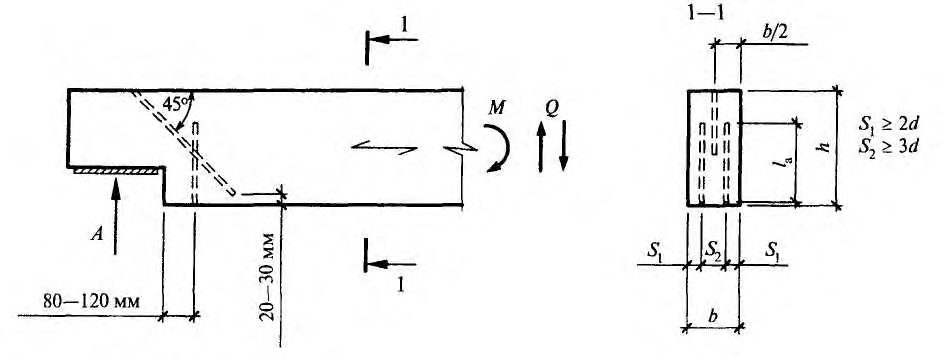
а - шахматная расстановка; б - двухрядная расстановка
Рисунок 20 - Соединение на вклеенных стальных нагелях
СП 64.13330.2017 Таблица 21
| Схема соединений | Напряженное состояние соединения | Расчетная несущая способность Т на 1 шов сплачивания (условный срез), кН |
|---|---|---|
| 1 Симметричные соединения 2 Несимметричные соединения 3 Симметричные и несимметричные соединения | а) Смятие в средних элементах б) Смятие в крайних элементах а) Смятие во всех элементах равной толщины, а также в более толстых элементах односрезных соединений б) Смятие в более толстых средних элементах двухсрезных соединений при а ≤ 0,5 с в) Смятие в более тонких крайних элементах при а ≤ ≤0,35 с г) Смятие в более тонких элементах односрезных соединений и в крайних элементах при с > а > 0,35 с а) Изгиб нагеля из арматуры А300 б) Изгиб нагеля из арматуры А400 | 0,75 cd о 1,2 аd о 0,53 cd о 0,38 cd о 0,8 ad о 1,5 k н ad о 2,5 d 2 +0,025 l н 2 , но не более 3,9 d 2 3,1 d 2 +0,025 l н 2 , но не более 4,5 d 2 |
Примечания
1 В таблице приведены следующие обозначения: с - толщина средних элементов, а также равных по толщине или более толстых элементов односрезных соединений; а - толщина крайних элементов, а также более тонких элементов односрезных соединений; d - номинальный диаметр вклеенного нагеля; d о - диаметр отверстия; все размеры выражены в сантиметрах.
2 См. примечания 2-4, 7 и 8 к таблице 18.
3 Расчет нагельных соединений на скалывание производить не следует, если выполнены условия расстановки нагелей в соответствии с 8.55.
9Указания по проектированию деревянных конструкций Общие указания
- торца по боковой поверхности - 0,3;
- боковых поверхностей - 0,2; б) если трение ухудшает условия работы конструкций и соединений, то коэффициент трения следует принимать равным 0,6.
По длине здания поперечные связи следует располагать в плоскости верхнего пояса или по верху несущих конструкций.
В качестве поясов связевых ферм следует использовать верхние пояса или все сечение несущих конструкций.
Использование профнастила, уложенного непосредственно по верху несущих конструкций, в качестве распорок и связей допускается только при специальном креплении и дополнительном обосновании в тех зданиях, в которых отсутствует химически агрессивная среда.
При использовании косого дощатого настила непосредственно по конструкциям и прогонам или двойного перекрестного дощатого настила постановка связей жесткости в пространственном покрытии не требуется.
Конструкция стыков растянутых элементов должна обеспечивать осевую передачу растягивающего усилия.
В соединениях на цилиндрических нагелях должно быть поставлено не менее 3 стяжных болтов с каждой стороны стыка.
Диаметр стяжных болтов d б следует принимать по расчету, но не менее 12 мм. Шайбы стяжных болтов должны иметь размер сторон или диаметр не менее 3 d б и толщину не менее
0,25 d б.
В каркасах одноэтажных большепролетных зданий (при пролетах более 24 м) следует использовать преимущественно статически определимые конструкции.
- В шарнирных узлах необходимо обеспечивать возможность их поворота без появления дополнительных внутренних усилий.
При проектировании КДК следует предусматривать мероприятия, предотвращающие скалывание древесины (например, армирование древесины вклеенными стержнями).
где σ0 - напряжения, действующие вдоль волокон древесины;
- угол между линией скоса и направлением волокон древесины.
Прогоны, обрешетки и настилы
- а) постоянная и временная от снега (расчет на прочность и прогиб);
- б) постоянная и временная от сосредоточенного груза 1 кН с умножением последнего на коэффициент перегрузки n = 1,2 и учетом коэффициента условия работы m н согласно пункту 1 таблицы 8 (расчет только на прочность).
При сплошном настиле или при разреженном настиле с расстоянием между осями досок или брусков не более 150 мм нагрузку от сосредоточенного груза следует передавать на 2 доски или 2 бруска, а при расстоянии более 150 мм - на 1 доску или брусок. При двойном настиле (рабочем и защитном, направленном под углом к рабочему) сосредоточенный груз следует распределять на ширину 500 мм рабочего настила.
Балки из цельной и клееной древесины
где А - опорная реакция от расчетной нагрузки; b и h - ширина и высота поперечного сечения элемента без подрезки.
Длина опорной площадки подрезки с должна быть не больше высоты сечения h , а длина скошенной части подрезки с 1 - не менее двух глубин а (рисунок 21).
Рисунок 21 Скошенная подрезка конца балки
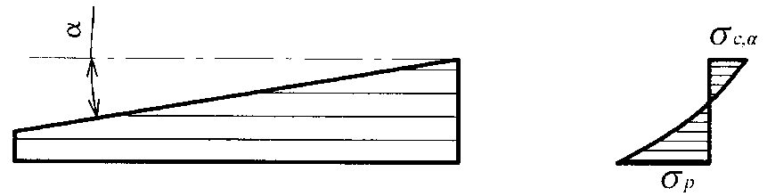
В том случае, если невозможно выполнить скошенную подрезку или ее глубина превышает 0,25 h , необходимо усиление зоны подрезки. Усиление производят вклеиванием поперечных (перпендикулярно волокнам) и наклонных (под углом 45° к волокнам) стержней (рисунок 22).
Рисунок 22 Усиление подрезки на конце балки
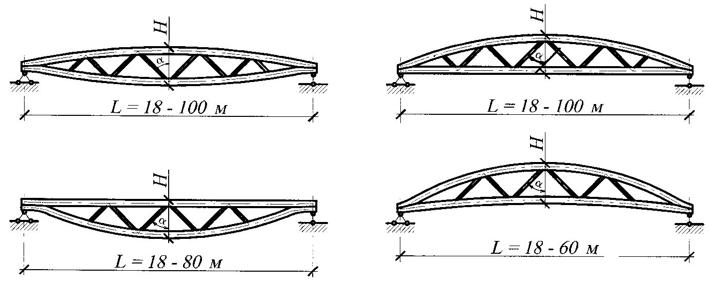
Длина поперечных стержней должна удовлетворять условию
где la расчетная длина стержня; a р = а - 30 мм (глубина подрезки минус 30 мм на непроклей).
Расчет стержней производят с учетом того, что все растягивающее усилие воспринимается поперечно вклеенными стержнями. Наклонные стержни воспринимают сдвигающие усилия в зоне трещины и снижают касательные напряжения на приопорном участке.
Расстояние от торца подрезки до вклеенных стержней должно быть 80-120 мм (120 мм для конструкций, эксплуатируемых в переменных температурно-влажностных условиях, в том числе на открытом воздухе).
Для 2 поперечно вклеенных стержней должно выполняться условие
где Т - несущая способность поперечно вклеенного стержня, определенная по 8.38 при l p = a p;
- А - опорная реакция;
- а - глубина подрезки;
- h высота сечения без учета подрезки.
Для наклонно вклеенного стержня должно быть выполнено условие
где Т - несущая способность поперечно вклеенного стержня, определенная по 8.38, условно принимая уровень площадки опирания за местоположение шва сплачивания.
Одна из опор в таких балках, независимо от пролета, должна быть подвижной во избежание возникновения распора.
При расчете гнутоклееных балок на прочность, кроме проверки краевых тангенциальных нормальных напряжений, необходима проверка максимальных радиальных растягивающих напряжений σ r max, действующих поперек волокон древесины, в соответствии с требованиями 7.13.
В том случае, когда волокна древесины параллельны одной из поверхностей балки и угол ската 10° (рисунок 23), напряжения изгиба в крайних волокнах, параллельных поверхности, следует рассчитывать по формуле
на скатной поверхности - по формуле
где R с , α - расчетное сопротивление древесины сжатию под углом к направлению волокон, определяемое по формуле (5).
Рисунок 23 - Односкатная балка
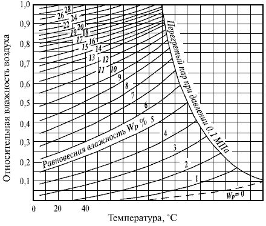
Для стенок балок должны применять водостойкую фанеру или LVL толщиной не менее 8 мм.
Составные балки
Составные балки из досок следует сплачивать с помощью гвоздей, шурупов, МЗП и др.
Конструирование и расчет составных балок (ребристых плит) композитного сечения, в которых железобетонная плита объединена с деревянными ребрами наклонно вклеенными анкерами, следует выполнять, руководствуясь положениями приложения Л.
Несущую способность наклонно вклеенного стержня, как связи сдвига Т с.с, определяют по формуле
где Т - несущая способность стержня, определенная в соответствии с 8.37.
Расстояние (шаг) между вклеенными стержнями s c.c должно удовлетворять условию
где Ms расчетная разница изгибающих моментов в начале и в конце участка s c.c между вклеенными связями;
I бр - момент инерции брутто поперечного сечения элемента относительно нейтральной оси;
S ′ бр - статический момент брутто ветви составного элемента относительно нейтральной оси.
Коэффициент k ж к моменту инерции поперечного сечения балки, учитывающий податливость наклонно вклеенных стержней, следует принимать равным 0,9.
Фермы
Фермы следует проектировать со строительным подъемом не менее 1 /200 пролета, осуществляемым в клееных конструкциях путем выгиба по верхнему и нижнему поясам.
- а) усилия в поясах следует определять из условия их неразрезности; следует учитывать изгибающие моменты, возникающие в опорных узлах, выполненных на наклонно вклеенных связях;
- б) усилия в решетке допускается определять из условия шарнирных узлов сопряжения ее элементов с поясами.
Рисунок 24 - Схемы линзообразных ферм
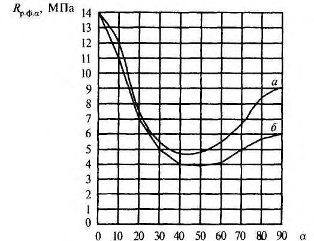
Особенности расчета и проектирования дощатых ферм с соединениями в узлах на МЗП изложены в приложении К.
Арки и своды
- а) на прочность по деформированной схеме:
- для двухшарнирных арок и сводов при симметричной нагрузке l 0 = 0,35 S ;
- трехшарнирных арок и сводов при симметричной нагрузке l 0 = 0,58 S ;
- двух- и трехшарнирных арок и сводов при кососимметричной нагрузке - по формуле
где S - полная длина дуги арки или свода;
- центральный угол полуарки, рад.
Для трехшарнирных стрельчатых арок с углом перелома в ключе более 10° при всех видах нагрузки l 0 = 0,5 S .
При расчете трехшарнирных арок на несимметричную нагрузку расчетную длину l 0 допускается принимать равной 0,58 S ; б) на устойчивость в плоскости кривизны для двух- и трехшарнирных арок и сводов l 0 = 0,58 S .
Расчет трехшарнирных арок на устойчивость плоской формы деформирования следует производить по 7.20.
Рамы
Опоры воздушных линий электропередачи
Диаметр приставок (пасынков, свай) опор ЛЭП напряжением 35 кВ и выше должен быть не менее 18 см. Для вспомогательных элементов опор диаметр бревен в верхнем отрубе должен быть не менее 14 см.
Конструкционные требования по обеспечению надежности деревянных конструкций
В тех случаях, когда древесина имеет повышенную начальную влажность и ее быстрое просыхание в конструкции затруднено, а также когда конструкционными мерами нельзя устранить постоянное или периодическое увлажнение древесины, следует применять химические меры защиты (консервирование, антисептирование, гидрофобизацию, нанесение влагозащитных покрытий и др.). Сказанное относится также к
СП 64.13330.2017 конструкциям из фанеры, LVL и других древесно-плитных материалов.
При возможности, несущие конструкции следует располагать таким образом, чтобы они целиком находились либо в пределах отапливаемого помещения, либо вне его.
Опорные части несущих конструкций (ферм, арок, балок и др.) при их размещении в гнездах каменных стен должны быть открыты. Запрещается заделывать наглухо зазоры между стенками гнезд и опорными частями конструкций кирпичом, раствором, герметизирующими материалами и т. п.
В наружных каменных стенах отапливаемых зданий и сооружений, а также во внутренних стенах, разделяющих отапливаемые и неотапливаемые помещения, стенки гнезд следует утеплять во избежание их промерзания в соответствии с теплотехническим расчетом.
В том случае, если опорную часть несущих конструкций устанавливают на деревянные подкладки (подушки), последние также следует отделять от более теплопроводного материала опоры гидроизоляционными прокладками. Подкладки (подушки) следует изготавливать из древесины твердых лиственных пород и консервировать невымываемыми или трудновымываемыми биозащитными составами.
54 9.52 При расположении деревянных рам, арок и стоек (колонн) внутри помещений обрез опоры следует устраивать на такой высоте от уровня пола, чтобы в процессе эксплуатации исключалась возможность увлажнения опорного узла.
В том случае, если опорная часть несущей конструкции находится на открытом воздухе, обрез фундамента должен быть устроен таким образом, чтобы обеспечивался быстрый отвод воды, попадающей на него в виде атмосферных осадков, и исключалось затопление опорного узла дождевыми и талыми водами.
В зданиях с химически агрессивной средой следует также ограничивать применение сквозных несущих конструкций из-за наличия большого числа промежуточных узлов и открытых горизонтальных и наклонных граней у деревянных элементов решетки, на которых скапливается химически агрессивная пыль.
В открытых сооружениях необходимо использовать средства, предохраняющие деревянные элементы конструкций от прямого попадания на них атмосферной влаги.
Для защиты от атмосферных осадков открытые горизонтальные и наклонные грани ответственных несущих конструкций следует защищать обшивками, консервирующими биозащитными составами, козырьками из атмосферо- и коррозиестойкого материала.
Устройство ендов в совмещенных покрытиях не допускается.
В панелях стен и плитах покрытий в случаях, предусмотренных теплотехническим расчетом, следует предусматривать использование пароизоляционного слоя.
При использовании для наружной обшивки стеновых панелей отапливаемых зданий паронепроницаемых материалов между обшивкой и утеплителем следует предусматривать вентиляционный продух.
- В плитах покрытия под кровлю из волнистых листов, профилированного металлического настила такие продухи не устраивают. Карнизный узел должен быть спроектирован таким образом, чтобы наружный воздух имел свободный доступ под кровельные листы. Не допускается закрывать снаружи подкровельное пространство от задувания снега с помощью гребенок без оставления продухов для вентиляции.
10Пожарно-технические требования к конструкциям из древесины
Предел огнестойкости
- температура начала обугливания древесины, которая составляет 270 ºС;
- достижение этой температуры на поверхности древесины через 4 мин после начала стандартного теплового воздействия пожара;
- условная скорость обугливания (скорость перемещения фронта обугливания), включающая влияние угловых закруглений, которую для древесины хвойных пород следует принимать постоянной, равной 0,7 мм/мин;
- снижение температуры древесины по гиперболическому закону за фронтом обугливания.
Повышение предела огнестойкости деревянных элементов конструкции и узлов их соединения достигается путем увеличения размеров их сечения, применения средств огнезащиты или теплоизолирующих материалов и облицовок, в том числе из пиломатериалов.
Пожарная опасность конструкций
Огнезащитные составы
- лаки огнезащитные, образующие на защищаемой поверхности тонкую прозрачную пленку;
- краски огнезащитные, образующие на защищаемой поверхности тонкую непрозрачную пленку;
- пасты, обмазки огнезащитные, образующие на защищаемой поверхности слой покрытия большей толщины, чем лаки и краски;
- составы пропиточные, в том числе огнебиозащитные;
- составы комбинированные огнезащитные, представляющие собой комплекс из 2 или более видов ОС, нанесение каждого из которых на защищаемую поверхность осуществляют последовательно.
- на открытом воздухе или под навесом;
- в закрытом неотапливаемом помещении;
- закрытом отапливаемом помещении;
- иных специально оговоренных условиях.
АПриложение А. Классификация клееной древесины
А.1 ДК подразделяют (классифицируют) по следующим основным признакам:
- функциональное назначение;
- условия эксплуатации;
- срок службы.
А.2 По функциональному назначению ДК подразделяют на классы с учетом уровня ответственности зданий и сооружений согласно ГОСТ 27751 и вида и пролета конструкций.
Характеристики классов функционального назначения приведены в таблице А.1.
Для различных элементов зданий применяют различные классы функционального назначения.
Таблица А.1
| Обозначение класса функционального назначения | Обозначение класса функционального назначения | Общая характеристика класса |
|---|---|---|
| 1 | 1а | Несущие конструкции с пролетами более 100 м; мачты и башни высотой более 60 м |
| 1 | 1б | Несущие конструкции для зданий музеев, спортивно-зрелищных объектов и торговых предприятий с массовым пребыванием людей, а также сооружений с пролетами более 60 м для конструкций из ДК и 40 м - из цельной древесины и древесных материалов; мачт и башен высотой более 40 м |
| 2 | 2а | Несущие конструкции любых форм, не вошедшие в классы 1а, 1б, 2б и 3 |
| 2 | 2б | Конструкции стен зданий и сооружений различного назначения, не вошедшие в 3-й класс Конструкции покрытий и перекрытий пролетами не более 7,5 м |
| 3 | 3 | Конструкции теплиц, парников, мобильных зданий (сборно-разборные и контейнерного типа); складов временного содержания; бытовок вахтового персонала и других подобных сооружений с ограниченными сроками службы и пребывания в них людей |
А.3 В зависимости от условий эксплуатации конструкции относят к классам эксплуатации, учитывающим эксплуатационные параметры относительной влажности, температуры воздуха в зоне расположения конструкций, характерные условия эксплуатации (в закрытых или открытых условиях).
Определяющим параметром является эксплуатационная влажность древесины (таблица 1), которую условно можно принять равной равновесной влажности древесины (рисунок А.1).
Учет классов условий эксплуатации осуществляют для назначения коэффициентов условия работы к расчетным сопротивлениям древесины, выбора типа клеев и защитных материалов при проектировании конструкций, а также для выбора системы контроля качества при изготовлении конструкций.
Рисунок А.1 -Диаграмма равновесной влажности древесины
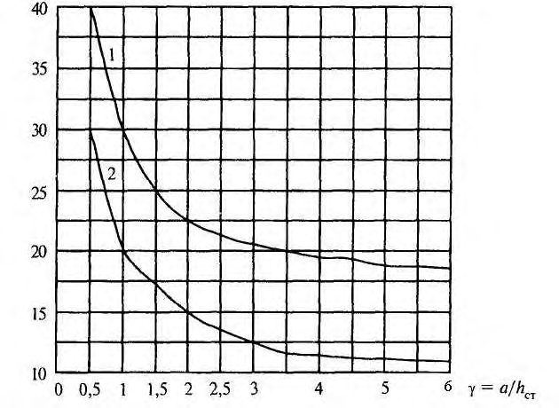
А.4 Примеры учета классов условий эксплуатации при проектировании и изготовлении конструкций приведены в таблице А.2.
Таблица А.2
| Класс условий эксплуатации | Класс условий эксплуатации | Класс условий эксплуатации | Дополнительная характеристика условий эксплуатации конструкций | Особенность учета классов при расчете конструкций | Примечания |
|---|---|---|---|---|---|
| Основной класс | Основной класс | Подкласс | Дополнительная характеристика условий эксплуатации конструкций | Особенность учета классов при расчете конструкций | Примечания |
| 1а | - | При сухом режиме помещений с относительной влажностью воздуха в отопительный сезон менее 40% | Эксплуатационная влажность древесины не превышает 12% m в = 1 | Применение КДК не допускается | |
| 1б | - | При сухом режиме помещений - относительная влажность воздуха в отопительный сезон от 40 %до 50% | Эксплуатационная влажность древесины не превышает 12% m в = 1 | Применение КДК не допускается | |
| 2.1 | При нормальном режиме помещений | Эксплуатационная влажность древесины не превышает 12% m в = 1 | Применение КДК не допускается | ||
| 2.2 | Под навесом в сухой зоне влажности | Эксплуатационная влажность древесины не превышает 12% m в = 1 | Применение КДК не допускается | ||
| 3.1 | При влажном режиме отапливаемых помещений | Эксплуатационная влажность древесины не превышает 15% m в = 0,9 Эксплуатационная | Применение КДК не допускается | ||
| 3.2 | Под навесом в нормальной зоне влажности | Эксплуатационная влажность древесины не превышает 15% m в = 0,9 Эксплуатационная | Применение КДК не допускается | ||
| 4а | 4а.1 | При мокром режиме эксплуатации помещений | влажность древесины не превышает 20% m в = 0,85 | Применение КДК не допускается | |
| 4а | 4а.2 | При искусственных тепловыделениях в неотапливаемых помещениях | влажность древесины не превышает 20% m в = 0,85 | Применение КДК не допускается | |
| 4а | 4а.3 | Под навесом во влажной зоне влажности | влажность древесины не превышает 20% m в = 0,85 | Применение КДК не допускается | |
| 4а | 4а.4 | В открытых атмосферных условиях | влажность древесины не превышает 20% m в = 0,85 | Применение КДК не допускается | |
| 4б | 4б.1 | При контакте с грунтом | Эксплуатационная влажность древесины может превышать 20% m в = 0,75 | Применение КДК не допускается | |
| 4б | 4б.2 | В воде | Эксплуатационная влажность древесины может превышать 20% m в = 0,75 | Применение КДК не допускается |
А.5 Необходимые меры по обеспечению долговечности конструкций зданий и сооружений с учетом конкретных условий эксплуатации проектируемых объектов, а также расчетные сроки их службы должен определять генеральный проектировщик по согласованию с заказчиком. Примерные сроки службы сооружений приведены в таблице А.3.
Таблица А.3
| Наименования объектов | Примерный срок службы, лет |
|---|---|
| Временные здания и сооружения (бытовки строительных рабочих и вахтового персонала, склады временные, летние павильоны и т. п.) | Не более 10 |
| Сооружения, эксплуатируемые в условиях сильноагрессивных сред (сосуды и резервуары, трубопроводы предприятий нефтеперерабатывающей, газовой и химической промышленности, сооружения в условиях морской среды и т. п.) | Не менее 25 |
| Здания и сооружения массового строительства в обычных условиях эксплуатации (здания жилищно-гражданского и производственного строительства) | Не менее 50 |
| Уникальные здания и сооружения (здания основных музеев, хранилищ национальных и культурных ценностей, произведения монументального искусства, стадионы, театры, здания высотой более 75 м, большепролетные сооружения и т. п.) | 100 и более |
БПриложение Б. Дополнительные требования к качеству древесины
Б.1 К древесине цельнодеревянных элементов и слоям клееных конструкций кроме требований ГОСТ 8486 на пиломатериалы хвойных пород и ГОСТ 9463 на круглые лесоматериалы следует предъявлять дополнительные требования: а) ширина годичных слоев в древесине элементов и слоев классов К26 и К24 должна быть не более 5 мм, а содержание в них поздней древесины - не менее 20 %; б) в слоях клееных изгибаемых и растянуто-изогнутых элементов 1-го и 2-го сорта или классов прочности не ниже С24 для крайней растянутой зоны (на 0,15 высоты сечения) и в цельнодеревянных элементах толщиной 60 мм и менее, работающих на ребро при изгибе или на растяжение, не допускается сердцевина.
Б.2 В конструкциях из ДК с использованием вклеенных стержней в слоях не допустимы компенсационные прорези.
ВПриложение В. Физико-механические характеристики клееной древесины из древесины сосны, ели и древесины из однонаправленного шпона LVL
В.1 Величину нормативного сопротивления материалов R н , МПа, определяют из условия
где R вр - величина временной прочности материала (среднее значение распределения), МПа; v - коэффициент вариации показателей прочности по данным испытаний;
- 1,65 -квантиль в предполагаемой статистической функции распределения с обеспеченностью 0,95, для которой определяется нормативное сопротивление.
Временные и нормативные сопротивления устанавливают испытаниями при режиме нагружения А (таблица 4) при влажности древесины 12 %.
В.2 Для древесины сосны и ели, отсортированной по сортам, временные и нормативные сопротивления приведены в таблице В.1, а для LVL - в таблице В.2.
Таблица В.1
| Вид напряженного состояния | вр н R R , МПа, элементов классов/сортов | вр н R R , МПа, элементов классов/сортов | вр н R R , МПа, элементов классов/сортов | вр ч н ч R R , МПа, чистой древесины |
|---|---|---|---|---|
| К26/1 | К24/2 | К16/3 | ||
| 1 Изгиб: | ||||
| а) при нагружении кромки | 26 36 | 24 33 | 16 22 | - |
| б) при нагружении пласти | 30 42 | 27 37,5 | 20 28 | 57 80 |
| 2 Сжатие вдоль волокон | 25 33 | 23 31 | 15 20 | 33 44 |
| 3 Растяжение вдоль волокон | 20 34 | 15 25 | - | 60 100 |
| 4 Скалывание вдоль волокон | 3,6 6 | 3,2 5 | 3,2 5 | 4,56 7 |
Примечания
1 Размеры поперечных сечений испытуемых образцов пиломатериалов принимают в соответствии с их толщиной по сортаменту.
2 Временные сопротивления следует определять по результатам испытаний согласно действующим нормам.
3 Прочность древесины брусьев и круглых лесоматериалов допускается оценивать визуально по сортообразующим признакам и дополнительным требованиям приложения Г.
4 Прочность слоев клееных конструкций и элементов цельнодеревянных конструкций, срощенных по длине на зубчатый шип, при испытаниях на изгиб и нагружении по пласти должна быть не ниже значений, указанных в пункте 1б для соответствующего класса (сорта).
В.3 Для бруса многослойного клееного из однонаправленного шпона LVL временные и нормативные сопротивления приведены в таблице В.2.
Таблица В.2
| № п. | Напряженное состояние | R н / R вр , МПа, для сортов классов прочности LVL | R н / R вр , МПа, для сортов классов прочности LVL | R н / R вр , МПа, для сортов классов прочности LVL |
|---|---|---|---|---|
| п. | 1/К45 | 2/К40 | 3/К35 | |
| 1 | Изгиб | 45/61 | 40/53 | 35/47 |
| 2 | Сжатие в плоскости листа вдоль волокон | 37/49 | 35/47 | 32/42 |
| 3 | Сжатие в плоскости листа поперек волокон | 6,0/8,8 | 5,8/8,5 | 5,6/8,2 |
| 4 | Сжатие из плоскости листа поперек волокон | 3,0/4,4 | 2,8/4,1 | 2,8/4,1 |
| 5 | Растяжение вдоль волокон | 38/51 | 36/49 | 34/46 |
| 6 | Растяжение поперек волокон в плоскости листа | 0,9/1,4 | 0,9/1,4 | 0,9/1,4 |
| 7 | Скалывание вдоль волокон поперек плоскости листа | 4,9/7,0 | 4,7/6,8 | 4,7/6,8 |
| 8 | Скалывание вдоль волокон в плоскости листа | 3,8/5,3 | 3,6/5,0 | 3,4/4,7 |
В.4 Физико-механические характеристики конструкционных пиломатериалов, установленные для классов прочности С14, С16, С18, С 20, С22, С24, С27, С30, С35, С40, С45 и С50, приведены в таблице В.3.
СП 64.13330.2017 Таблица В.3
В.5 Физико-механические характеристики ДК, установленные для классов прочности К20, К24, К26, К28, К32 и К36, приведены в таблице В.4.
| Наименование | Обозна- чение | Значение свойств для классов прочности | Значение свойств для классов прочности | Значение свойств для классов прочности | Значение свойств для классов прочности | Значение свойств для классов прочности | Значение свойств для классов прочности | Значение свойств для классов прочности | Значение свойств для классов прочности | Значение свойств для классов прочности | Значение свойств для классов прочности | Значение свойств для классов прочности | Значение свойств для классов прочности |
|---|---|---|---|---|---|---|---|---|---|---|---|---|---|
| свойств | свойств | С14 | С16 | С18 | С20 | С22 | С24 | С27 | С30 | С35 | С40 | С45 | С50 |
| Прочность, МПа | Прочность, МПа | Прочность, МПа | Прочность, МПа | Прочность, МПа | Прочность, МПа | Прочность, МПа | Прочность, МПа | Прочность, МПа | Прочность, МПа | Прочность, МПа | Прочность, МПа | Прочность, МПа | Прочность, МПа |
| Нормативное значение при изгибе, 5 %-ный квантиль | R и, н | 14 | 16 | 18 | 20 | 22 | 24 | 27 | 30 | 35 | 40 | 45 | 50 |
| Модуль упругости, ГПа | Модуль упругости, ГПа | Модуль упругости, ГПа | Модуль упругости, ГПа | Модуль упругости, ГПа | Модуль упругости, ГПа | Модуль упругости, ГПа | Модуль упругости, ГПа | Модуль упругости, ГПа | Модуль упругости, ГПа | Модуль упругости, ГПа | Модуль упругости, ГПа | Модуль упругости, ГПа | Модуль упругости, ГПа |
| Среднее значение модуля упругости при изгибе | E 0, ср | 7 | 8 | 9 | 9,5 | 10 | 11 | 11,5 | 12 | 13 | 14 | 15 | 16 |
| Нормативное значение модуля упругости, 5 %-ный квантиль | E 0, н | 4,7 | 5,4 | 6,0 | 6,4 | 6,7 | 7,4 | 8,0 | 8,4 | 8,7 | 9,4 | 10,0 | 10,7 |
| Плотность, кг/м³ | Плотность, кг/м³ | Плотность, кг/м³ | Плотность, кг/м³ | Плотность, кг/м³ | Плотность, кг/м³ | Плотность, кг/м³ | Плотность, кг/м³ | Плотность, кг/м³ | Плотность, кг/м³ | Плотность, кг/м³ | Плотность, кг/м³ | Плотность, кг/м³ | Плотность, кг/м³ |
| Нормативное значение плотности, 5 %-ный квантиль | r н | 290 | 310 | 320 | 330 | 340 | 350 | 370 | 380 | 400 | 420 | 440 | 460 |
| Среднее значение плотности | r ср | 350 | 370 | 380 | 390 | 410 | 420 | 450 | 460 | 480 | 500 | 440 | 460 |
| Прочность, МПа | Прочность, МПа | Прочность, МПа | Прочность, МПа | Прочность, МПа | Прочность, МПа | Прочность, МПа | Прочность, МПа | Прочность, МПа | Прочность, МПа | Прочность, МПа | Прочность, МПа | Прочность, МПа | Прочность, МПа |
| Растяжение вдоль волокон древесины | R р, н | 8 | 10 | 11 | 12 | 13 | 14 | 16 | 18 | 21 | 24 | 27 | 30 |
| Растяжение поперек волокон | R р90, н | 0,4 | 0,5 | 0,5 | 0,5 | 0,5 | 0,5 | 0,6 | 0,6 | 0,6 | 0,6 | 0,6 | 0,6 |
| Сжатие вдоль волокон | R с, н | 16 | 17 | 18 | 19 | 20 | 21 | 22 | 23 | 25 | 26 | 27 | 29 |
| Сжатие поперек волокон | R с90, н | 2,0 | 2,2 | 2.2 | 2,3 | 2,4 | 2,5 | 2,6 | 2,7 | 2,8 | 2,9 | 2,3,1 | 3,2 |
| Скалывание вдоль волокон | R ск, н | 1,7 | 1,8 | 2,0 | 2,2 | 2,4 | 2,5 | 2,8 | 3,0 | 3,4 | 3,8 | 3,8 | 3,8 |
| Жесткость, ГПа | Жесткость, ГПа | Жесткость, ГПа | Жесткость, ГПа | Жесткость, ГПа | Жесткость, ГПа | Жесткость, ГПа | Жесткость, ГПа | Жесткость, ГПа | Жесткость, ГПа | Жесткость, ГПа | Жесткость, ГПа | Жесткость, ГПа | Жесткость, ГПа |
| Среднее значение модуля упругости поперек волокон | E 90, ср | 0,23 | 0,27 | 0,30 | 0,32 | 0,33 | 0,37 | 0,38 | 0,40 | 0,43 | 0,47 | 0,50 | 0,53 |
| Среднее значение модуля сдвига | G ср | 0,44 | 0,50 | 0,56 | 0,59 | 0,63 | 0,69 | 0,72 | 0,75 | 0,81 | 0,88 | 0,94 | 1,00 |
Таблица В.4
| Наименование свойств | Обозначение | Значение свойств для классов прочности | Значение свойств для классов прочности | Значение свойств для классов прочности | Значение свойств для классов прочности |
|---|---|---|---|---|---|
| Обозначение | К24 | К28 | К32 | К36 | |
| Прочность, МПа | Прочность, МПа | Прочность, МПа | Прочность, МПа | Прочность, МПа | Прочность, МПа |
| Нормативное значение при изгибе, 5 %-ный квантиль | R и, н | 24 | 28 | 32 | 36 |
| Модуль упругости, ГПа | Модуль упругости, ГПа | Модуль упругости, ГПа | Модуль упругости, ГПа | Модуль упругости, ГПа | Модуль упругости, ГПа |
| Среднее значение модуля упругости при изгибе | E 0, ср | 1600 | 12600 | 13700 | 14700 |
| Нормативное значение модуля упругости, 5-% квантиль | E 0, н | 9400 | 10200 | 11100 | 11900 |
| Плотность, кг/м³ | Плотность, кг/м³ | Плотность, кг/м³ | Плотность, кг/м³ | Плотность, кг/м³ | Плотность, кг/м³ |
| Нормативная плотность, 5 %-ный квантиль | ρ н | 380 | 410 | 430 | 450 |
| Прочность, МПа | Прочность, МПа | Прочность, МПа | Прочность, МПа | Прочность, МПа | Прочность, МПа |
| Растяжение вдоль волокон | R р, н | 16,5 | 19,5 | 22,5 | 26,0 |
| Растяжение поперек волокон | R р90, н | 0,40 | 0,45 | 0,50 | 0,60 |
| Сжатие вдоль волокон | R с, н | 24 | 26,5 | 29 | 31 |
| Сжатие поперек волокон | R с90, н | 2,7 | 3,0 | 3,3 | 3,6 |
| Скалывание вдоль волокон | R ск, н | 2,76 | 3,2 | 3,8 | 4,3 |
| Модуль упругости, ГПа | Модуль упругости, ГПа | Модуль упругости, ГПа | Модуль упругости, ГПа | Модуль упругости, ГПа | Модуль упругости, ГПа |
| Среднее значение модуля упругости поперек волокон | E 90, ср | 390 | 420 | 460 | 490 |
| Среднее значение модуля сдвига | G ср | 720 | 780 | 850 | 910 |
ГПриложение Г. Плотность древесины и древесных материалов
- Г.1 Для определения собственного веса конструкций плотность древесины различных пород следует принимать по таблице Г.1.
- Г.2 Плотность свежесрубленной древесины хвойных и мягких лиственных пород следует принимать равной 850 кг/м³ , твердых лиственных пород - 1000 кг/м³ .
- Г.3 Плотность клееной древесины следует принимать как неклееной.
- Г.4 Плотность обычной фанеры следует принимать равной плотности древесины шпонов, а бакелизированной - 1000 кг/м³ .
- Г.5 Плотность древесины из однонаправленного шпона 500-600 кг/м³ , зависит от породы древесины шпонов.
Таблица Г.1
| Порода древесины | Плотность древесины, кг/м³ , в конструкциях для условий эксплуатации по таблице 1 | Плотность древесины, кг/м³ , в конструкциях для условий эксплуатации по таблице 1 |
|---|---|---|
| 1А, 1 и 2 | 3 и 4 | |
| Хвойные: лиственница | 650 | 800 |
| сосна, ель, кедр, пихта | 500 | 600 |
| Твердые лиственные: дуб, береза, бук, ясень, клен, граб, акация, вяз и ильм | 700 | 800 |
| Мягкие лиственные: осина, тополь, ольха, липа | 500 | 600 |
ДПриложение Д. Графики для расчета фанерных стенок балок и плит
При проверке прочности и устойчивости стенок двутавровых и коробчатых балок расчетное сопротивление фанеры растяжению под углом R ф.р. следует принимать по графику на рисунке Д.1, коэффициенты k и и k τ - по графикам рисунков Д.2 и Д.3.
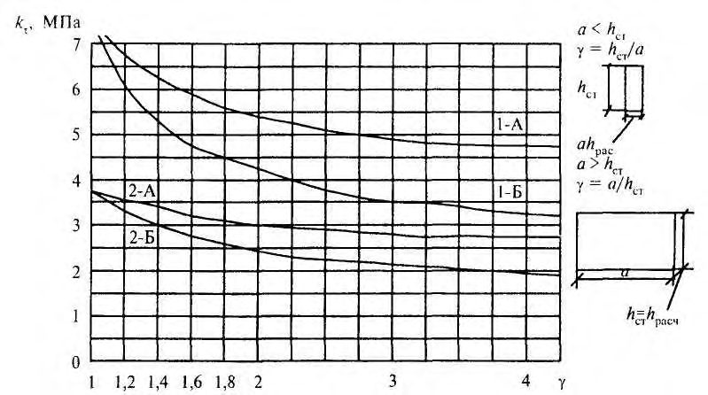
а
- семислойной; б
- пятислойной
Рисунок Д.1 - Графики для определения расчетных сопротивлений при растяжении под углом к волокнам наружных слоев березовой фанеры марки ФСФ
1 - для бакелизированной фанеры марок ФБС и ФБСВ толщиной 7 мм и более; 2 - для березовой фанеры марки ФСБ толщиной 8 мм и более. В выражении γ = a / h ст a - расстояние между ребрами жесткости балки; h ст - высота стенки между внутренними гранями полок
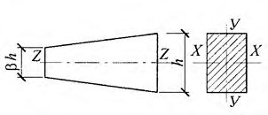
Рисунок Д.2 - Графики для определения коэффициента k и при расположении волокон в наружных слоях фанеры вдоль пролета
1-A - для бакелизированной фанеры марок ФБС и ФБСВ толщиной 7 мм и более при направлении волокон наружных слоев параллельно малой стороне панели; 1-Б - для бакелизированной фанеры марок ФБС и ФБСВ толщиной 7 мм и более при направлении волокон наружных слоев перпендикулярно малой стороне панели; 2-А , 2-Б - то же, для березовой фанеры марки ФСФ толщиной 8 мм и более
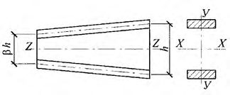
Рисунок Д.3 - Графики для определения k τ
ЕПриложение Е. Данные для расчета сжатых, изгибаемых и сжато-изгибаемых элементов
Е.1 Значение коэффициента k ф, учитывающего переменность высоты сечения, для расчетов на устойчивость плоской формы деформирования изгибаемых элементов принимается по таблице Е.1.
Таблица Е.1
| Коэффициент k ф | Коэффициент k ф |
|---|---|
| при закреплении только по концам участка l р | при закреплении по концам и по растянутой от момента M кромки |
| 1 | 1 |
| 1,13 - 0,13α 0 ≤ α ≤ 1 | 1,13 - 0,13α 0 ≤ α ≤ 1 |
| 1,13 - α × (0,12 + 0,02α) -2 ≤ α ≤ 0 | 1,13 - α × (0,12 + 0,02α) -2 ≤ α ≤ 0 |
| 1,35 - 0,35α 0 ≤ α ≤ 1 | 1,35 - 0,35α 0 ≤ α ≤ 1 |
| 1,35 - 0,35α - 1 ≤ α ≤ 0 | 4/(3 + α) - 1 ≤ α ≤ 0 |
| 1,35 + 1,45( c / l р ) 2 | 1,35 + 0,3( c / l р ) |
| 1,75 - 0,75α 0 ≤ α ≤ 1 | 3/(2 + α) 0 ≤ α ≤ 1 |
| 1,75 - 0,75α - 1 ≤ α ≤ 0 | 3/(2 + α) - 2 < α ≤ 0 |
| 2,54 | 2,32 |
| 1,13 - α × (1,4 + 1,27α) - 1 ≤ α ≤ 0 | 1,13 - α × (0,57 + 0,2α) - 1 ≤ α ≤ 0 |
Е.2 Значение коэффициента k ж N для расчета сжатых и сжато-изгибаемых элементов с переменной высотой и постоянной шириной сечения принимается по таблице Е.2.
Таблица Е.2
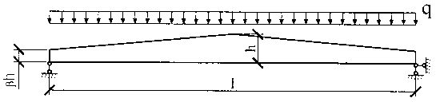
Е.3 Значение коэффициентов k ж М для расчетов на устойчивость плоской формы деформирования сжато-изгибаемых элементов с переменной высотой и постоянной шириной сечения принимается по таблице Е.3.
Таблица Е.3
| Формы эпюры | k ж М | k ж М |
|---|---|---|
| Формы эпюры | β 1/2 | β 1/2 |
| 3-d β 1 | β 1/2 | |
| 3-d β 1 | β 1/2 | |
| p 2C/ 2 β 1 l + | p 3-2C/ β 1 l | |
| β 1/2 | β 2/5 | |
| β 1/4 | β 1/2 |
- Е.4 Значения коэффициентов k и с для вычисления прогибов балок с учетом переменности сечения и деформаций сдвига принимать по таблице Е.4.
Таблица Е.4
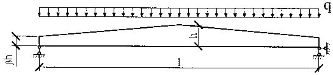
ЖПриложение Ж. Вклеивание стержней
Ввиду особой важности и ответственности процесса, рекомендации могут применять только на предприятиях со специально обученным персоналом и лицами, непосредственно допущенными к этой операции приказом по предприятию.
Эти работы оформляют актом на скрытые работы, подписанным руководителем отдела технического контроля (ОТК), исполнителем и технологом. Процесс возможен только в заводских условиях, при положительной температуре, при влажности древесины не выше 15 % и в защищенных от увлажнения помещениях.
Ж.1Материалы
Ж.1.1 Для вклеивания используют эпоксидный клей на основе смолы ЭД-20. Для примера приведены составы клеев ЭПП-1 и ЭПЦ-1:
| смола ЭД-20 (ГОСТ 10587) . . . . . . . . . . . . . . . . . . . . . . . . . . . . . . . . . | . . . . 100 в.ч.; |
|---|---|
| отвердитель - ПЭПА . . . . . . . . . . . . . . . . . . . . . . . . . . . . . . . . . . . . . . . | 10 -12 в.ч.; |
| пластификатор - МГФ9 . . . . . . . . . . . . . . . . . . . . . . . . . . . . . . . . . . . . | 20 -30 в.ч.; |
| наполнитель - кварц молотый для ЭПП-1 (ГОСТ 9077, марка «Б») или портландцемент для ЭПЦ-1 . . . . . . . . . . . . . . . . . . . . . . . . . . . . . | 50 -100 в.ч. |
Возможность использования других составов и марок клея для вклеивания стержней должна быть обоснована соответствующими испытаниями с определением физикомеханических характеристик и технологичности.
Ж.1.2 Для вклеивания используют металлические стержни из арматуры периодического профиля классов А300, А400, А500 и А600. Если предполагается сварка или гнутье, то термически упрочненная арматура не допускается. Стержни должны быть без заусенцев, очищены от окалины, ржавчины, грязи, краски, обезжирены и не иметь погибь по длине. На них на всей вклеиваемой длине должны быть рифы полного профиля. Очистку лучше производить пескоструйным или химическим способами.
Допускается использовать высокопрочную арматуру с винтовой формой профиля и специальными гайками без сварки. Может быть использована и арматура класса А240 (гладкая) либо круглая сталь после нарезки на ней резьбы на вклеиваемой части. Стержни могут быть оцинкованы (кроме холодного цинкования).
Стержни могут быть сварены с закладными деталями перед вклеиванием или после. Допускается комбинированный вариант. При сварке после вклеивания необходимо руководствоваться Ж.7.4 и Ж.7.5.
Ж.1.3 Влажность древесины для устройства таких соединений допускается не более 12 % при эксплуатации конструкций внутри помещений и не более 15 % - для открытых сооружений.
Ж.2Сверление отверстий и инструмент
Ж.2.1 Перед сверлением производят разметку осей стержней и направления их мелом на боковой поверхности.
Ж.2.2 Определяют порядок сверления, чтобы отверстия в случае пересечения внутри не привели к утечке клея или к образованию «сообщающихся сосудов». Лучше производить сверление только с одной грани, затем после вклеивания стержней и выдержки - с противоположной грани.
Ж.2.3 Наклон отверстий к горизонту не должен быть меньше 20 для удобства заполнения клея самотеком.
- Ж.2.4 Диаметр отверстий должен быть больше наружного диаметра стержней на 3-4 мм.
- Ж.2.5 Минимальное расстояние до боковой плоскости от края отверстия не должно быть менее 25 мм при глубине отверстия не более 700 мм и 30 мм при большей глубине.
- Ж.2.6 При сверлении отверстий следует использовать кондукторы, конструкцию которых разрабатывает завод-изготовитель совместно с проектировщиками (рисунок Ж.1).
- Ж.2.7 Отверстия следует сверлить непосредственно перед вклеиванием. Они не должны оставаться свободными дольше одной смены, чтобы исключить возможность попадания в них воды, пыли, грязи и др.
- Ж.2.8 После сверления отверстия желательно продувать сжатым воздухом или прочищать специальным ершом от опилок.
- Ж.2.9 Диаметр и глубину отверстий, а также диаметр и длину соответствующих стержней необходимо контролировать погружением последних в отверстия без клея. При этом нельзя допускать, чтобы короткие стержни «утонули» в отверстии. Глубина сверления отмечается на сверлах краской, цветной изолентой или муфтами-ограничителями.
- Ж.2.10 Для сверления используют специальные длинные сверла для древесины или обычные сверла по металлу.
- Ж.2.11 Длину сверл регулируют путем наращивания арматурными стержнями диаметром 12-14 мм при сварке. При этом центрирование легко достигается проковкой стыка в горячем состоянии. Конус нужного калибра также присоединяют при сварке.
- Ж.2.12 Для сверления используют ручные дрели мощностью не менее 600 Вт, обязательно с 2 ручками.
Рисунок Ж.1 - Конструктивная схема кондуктора для сверления наклонных отверстий и сварки закладных деталей
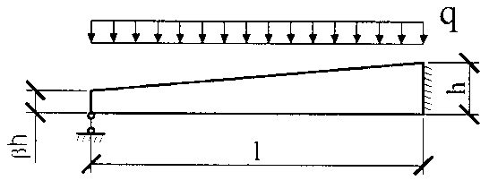
Ж.3Подготовка стрежней к вклеиванию
- Ж.3.1 Стержни перед вклеиванием должны быть повторно освидетельствованы и соответствовать проекту по классу стали, количеству, диаметрам, глубине и качеству.
- Ж.3.2 Необходимо убедиться в соответствии марки закладной детали проекту.
- Ж.3.3 Стержни должны свободно, без усилий входить в отверстия и занимать проектное положение. Для этого они должны быть проверены пробным погружением насухо.
Ж.3.4 Стержни не должны быть загрязнены маслами, быть влажными или покрытыми ржавчиной. Для очистки используют щетки, наждачную бумагу, ацетон или пескоструйный аппарат.
- Ж.3.5 Перед вклеиванием температура стержней не должна быть ниже 18-20 С; для легкости погружения допускается подогрев стержней до температуры от 30 С до 40 С.
Ж.4Приготовление клеев
Перед работой следует убедиться в наличии компонентов в необходимом объеме, в их соответствии наименованиям, срокам годности и спецификациям (в проекте).
- Ж.4.1 Клей можно приготавливать при температуре воздуха в помещении и компонентов клея в пределах от 16 С до 25 С. Следует иметь в виду, что при повышении температуры резко снижается жизнеспособность клея, а при понижении - технологичность. Увеличение температуры может привести к мгновенной реакции и, как следствие, к проблемам вклеивания, порче закладных деталей и посуды.
- Ж.4.2 Необходимо строго контролировать время с момента смешивания отвердителя и смолы. Оно не должно превышать времени рабочей жизнеспособности клея (т. е. от 20 до 30 мин, в зависимости от температуры).
- Ж.4.3 Для повышения жизнеспособности клей допускается охлаждать в емкости с водой, но при этом нельзя допускать попадания воды в клей или в отверстия.
- Ж.4.4 Для приготовления клея лучше использовать пластмассовую толстостенную посуду.
- Ж.4.5 Одновременно следует приготавливать не более 2,5 кг клея из-за опасности его разогрева и неуправляемой реакции.
- Ж.4.6 Для взвешивания необходимо использовать весы с точностью не более 10 г.
- Ж.4.7 Последовательность приготовления композиции: смола - пластификатор, отвердитель, наполнитель.
- Ж.4.8 Время перемешивания клея - от 3 до 4 мин вручную, при механическом перемешивании - от 2 до 3 мин, до однородной массы.
- Ж.4.9 Перед приготовлением клея тестируют качество компонентов путем изготовления контрольных образцов клея в объеме от 20 до 50 г с отверждением при повышенной температуре (не более 30 С) для активизации процесса.
- Ж.4.10 При определении объема клея для приготовления следует производить соответствующие расчеты с учетом времени, потраченного на все операции: заполнение отверстий клеем, погружение стержней и др. Обычно приготавливают не более 1-2 кг клея. Для вклеивания одного стержня длиной 1 м диаметром 20 мм требуется в среднем 350 г клея. Но в каждом случае удельный расход клея уточняют опытным путем, пробным вклеиванием первых стержней, чтобы после погружения стержня из отверстия появлялся небольшой избыток клея (порядка 5-10 г).
- Ж.4.11 Дозировка клея по объему не допускается из-за налипания клея на стенки посуды и других специфичных особенностей.
Ж.5Заполнение клеем отверстий и погружение стержней
Это одна из ответственных операций, которую должна особо контролировать служба ОТК.
- Ж.5.1 Перед заполнением клеем для контроля глубины и диаметра отверстия необходимо опустить в него стержень насухо.
- Ж.5.2 Заполнение клеем и вклеивание стержня производят последовательно, только в 1-2 отверстия, чтобы избежать неконтролируемой полимеризации или «голодного» вклеивания, когда из-за непредвиденных утечек может оказаться недостаток клея или его избыток.
- Ж.5.3 Для заполнения клеем необходимо использовать мерную емкость объемом только на 1 отверстие. Это обязательное условие качественного склеивания.
- Ж.5.4 Не допускается заполнение нескольких отверстий из общей емкости без контроля объема. Это неизбежно приведет к браку соединений. При этом исключается возможность контроля полноты заполнения.
- Ж.5.5 В отдельных случаях (для крупногабаритных конструкций) допускается заполнение клеем через дополнительные отверстия под давлением (рисунок Ж.2) с использованием специальных туб типа шприцев или пневмоустановок. Ввиду важности такие операции следует производить под контролем представителя проектной организации. После появления избытка клея сверху над стержнем дополнительные отверстия должны забивать специальными пробками.
- Ж.5.6 Одновременно с заполнением отверстий должны быть изготавлены контрольные образцы для испытаний на продавливание, по одному образцу на каждый замес клея (Ж.6).
- Ж.5.7 Сразу после заполнения отверстия клеем в него погружают стержень. Погружение производят вдавливанием с вращением. Операция упрощается и качество возрастает, если погружение производят с помощью вибратора (вибробулава со специальной насадкой). Если после погружения из отверстия избыток клея не появился, то стержень необходимо приподнять и установить величину и причину недостатка в клее. Если отверстие оказалось незаполненным до верху на 2-3 диаметра, то допускается недостачу компенсировать подливкой; если следов клея не будет обнаружено более чем на 1/3 длины стержня, то его надлежит полностью извлечь, заполнить отверстие дополнительным объемом и осуществить повторное погружение. При этом необходимо обязательно выявить и устранить причину «голодного» вклеивания. Причина может состоять в ошибках при дозировке клея либо в утечке клея в трещины или в соседние отверстия.
Рисунок Ж.2 - Схема подачи клея под давлением
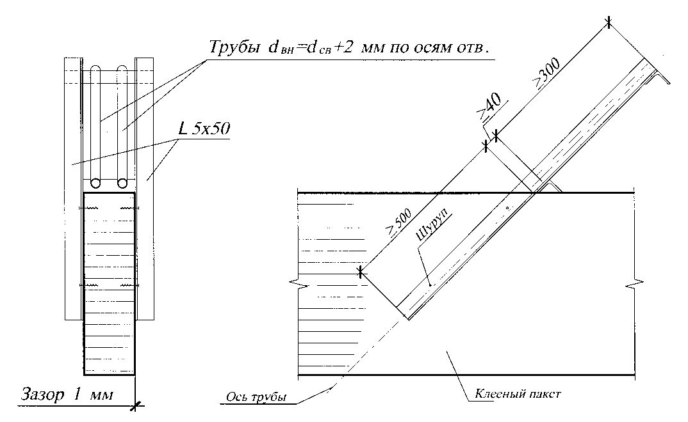
Ж.5.8 Соединения, в которых обнаружены утечки клея, следует актировать или забраковать с их заменой новыми по предложениям авторов проекта.
Ж.6Выдержка соединений после вклеивания и контроль качества
- Ж.6.1 После вклеивания соединения должны находиться в состоянии покоя при температуре плюс18 С не менее 10-12 ч для достижения соединением разборной прочности.
- Ж.6.2 После 12 ч выдержки соединения могут перемещаться, кантоваться, но не допускается их нагружение.
- Ж.6.3 Нагружать соединение усилием в 70 % расчетной нагрузки допускается после 3 сут отверждения клея.
- Ж.6.4 Испытания контрольных соединений производят не ранее чем через 3 сут отверждения при температуре воздуха плюс 18 С.
- Ж.6.5 Контроль качества соединений включает следующее:
- контроль влажности древесины в отверстии;
- правильность разметки;
- соответствие параметров соединений проекту;
- соответствие класса арматуры проекту;
- соответствие качества поверхности стержней;
- контроль качества компонентов клея;
- контроль жизнеспособности клея при заданной температуре в зоне производства работ;
- контроль условий производства работ (наличие подмостей, расположение оси отверстий по отношению к горизонту, наличие инструментов, наличие контрольных образцов и маркировки на них, готовность технологической карты и т. п.);
- контроль последовательности сверления отверстий и вклеивания;
- наличие емкостей объемом на одно соединение для заполнения отверстий клеем;
- контроль полноты заполнения отверстий клеем при погружении стержней;
- актирование соединений с «голодным» вклеиванием и меры по устранению его причин;
- отметки в журналах работ по технологическому процессу.
- Ж.6.6 Проводят испытания контрольных образцов на продавливание (рисунок Ж.3). Прочность на продавливание не должна быть ниже 6,5 МПа.
Рисунок Ж.3 - Схема образцов для испытаний
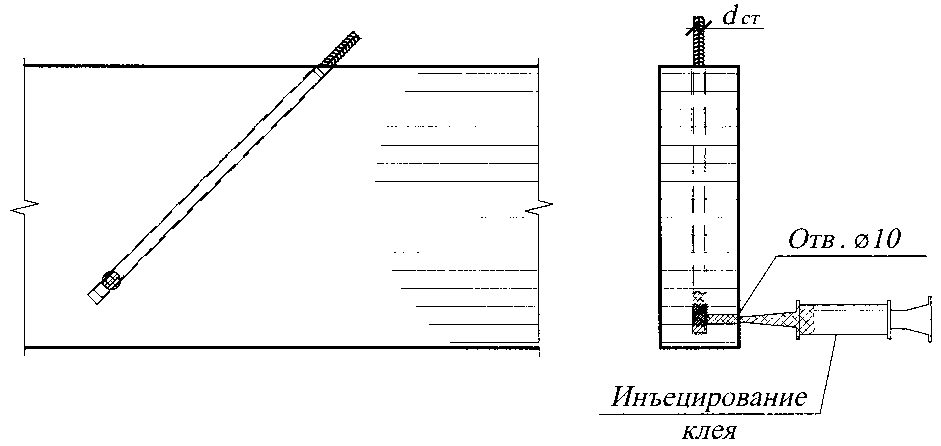
- Ж.6.7 Прочность на продавливание τ определяют отношением разрушающей нагрузки к боковой поверхности отверстия следующим образом:
где Р разр - разрушающая нагрузка; d отв - диаметр отверстия; l вкл - глубина вклеивания, l вкл = (4…5) d ; d - номинальный диаметр стержня.
- Ж.6.8 Оформляют результаты испытаний в журнале. При этом отмечают наименование объекта, марку конструкций, дату вклеивания.
- Ж.6.9 В случае низких результатов совместно с авторами проекта принимают решение об усилении конструкций или испытаниях большего количества соединений.
- Ж.6.10 На каждую партию конструкций составляют акт скрытых работ по устройству соединений на вклеенных стержнях. Партией считают конструкции или узлы, принадлежащие одному объекту и изготовленные в одну смену.
Ж.7Техника безопасности
- Ж.7.1 Помещение, в котором изготавливают клей, должно быть оборудовано общей и местной принудительной и естественной вентиляцией, горячей и холодной водой.
- Ж.7.2 При работе с клеем обязательно использовать резиновые или полиэтиленовые перчатки.
- Ж.7.3 Попавший на руки клей можно удалять ацетоном и водой с мылом.
- Ж.7.4 При сварке вклеенных деталей необходим местный отсос продуктов горения и соблюдение противопожарных мероприятий. Защиту древесины от копоти, обугливания и воспламенения осуществляют с помощью экранов из стали, асбеста и пр.
- Ж.7.5 Сварку выполняют швами по захваткам, чтобы исключить перегрев и воспламенение древесины. Продолжительность непрерывной сварки 1 шва не должна превышать 1 мин. здесь B = Rр / Rр 45 - (1 k )/4; k = Rр / Rр 90.
И.2 Угол наклона направления главного растягивающего напряжения σ1 к волокнам древесины следует вычислять по формулам:
И.3 Величину наибольших нормальных растягивающих поперек волокон древесины напряжений σ y в приопорных зонах и в окрестностях действия сосредоточенных поперечных сил P следует определять численным методом либо рассчитывают по формуле σ y = σ р 90 = 2 Р η1 / bh , И.4) где Р -сосредоточенная сила (опорная реакция балки, давление от подвесного оборудования, усилие сжатия в стойке фермы и т. д.); η1 - ордината положительной части кривой распределения нормальных напряжений σ y от единичной сосредоточенной силы (рисунок И.1); b - ширина поперечного сечения элемента; h - высота поперечного сечения элемента.
Ординату η1 в интервале - 0,25 h оп y + 0,25 h оп рассчитывают по формуле
И.4 При передаче поперечной силы не по кромке элемента, а по части высоты торца нормальное напряжение σ y , растягивающее древесину, умножают на коэффициент 1,4.
ИПриложение И. Расчет на прочность по главным площадкам приопорных участков клееных деревянных балок
И.1 Приопорные участки клееных деревянных балок с соотношением h / b 4, а также участки в местах действия сосредоточенных сил, кроме требований разделов 6 и 7, должны быть рассчитаны на прочность по главным площадкам с учетом всех компонент плоского напряженного состояния по формуле
где σ1 - значение главного растягивающего напряжения; σ x , σ y и τ xy - компоненты плоского напряженного состояния;
Rр - расчетное значение сопротивления древесины при растяжении под углом к направлению волокон, определяемое по формуле
Рисунок И.1 - Схема распределения напряжений σ y в приопорной зоне балки
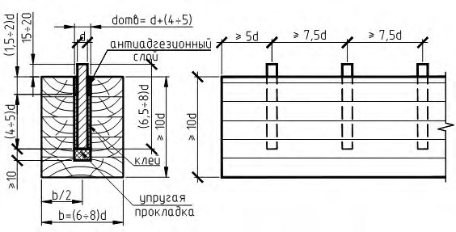
И.5 В том случае, когда условие (И.1) не выполняется, необходима установка вклеенных или ввинченных стержней под углом = 40° - 45° к волокнам древесины. Величину главного растягивающего усилия, воспринимающего наклонными стержнями, рассчитывают по формуле
Вклеенные или ввинченные стержни должны устанавливать с одинаковым шагом на длине опасной зоны, равной 0,7 h оп, отстоящей от оси опоры на расстоянии, равном h оп. Первый наклонный стержень должен быть установлен на расстоянии x = h оп + 0,1 h оп от оси опоры. Длина анкеровки стержней не должна быть менее 0,7 h оп/cos .
КПриложение К. Особенности проектирования дощатых ферм с соединениями в узлах на металлических зубчатых пластинах
К.1 Расчетная схема дощатых ферм с соединениями в узлах на МЗП предполагает шарнирное закрепление элементов решетки к неразрезным поясам. Стыкование досок поясов по длине - шарнирное, вне зоны узлов крепления решетки.
- К.2 Высоту ферм рекомендуется принимать не менее 1/5 пролета. При меньшей высоте ферм расчет необходимо выполнять с учетом линейной податливости стержней в узлах. При этом в расчете следует учитывать, что при усилиях, соответствующих расчетной несущей способности соединений, деформации стержней в узлах составляют 1,5 мм.
- К.3 Пояса ферм рассчитывают как сжато-изгибаемые и растянуто-изгибаемые элементы. Элементы решетки допускается рассматривать как центрально-сжатые и центрально-растянутые. Ослабление сечения гнездами от зубьев МЗП не учитывают.
К.4 Расчетная несущая способность соединений на МЗП зависит от типа пластин с заданной геометрией зубьев. Высота зубьев рекомендуется не более 12-кратной толщины пластины. Толщина стальной пластины составляет от 1 до 2 мм. Расчетную несущую способность соединений R определяют по результатам испытаний образцов с конкретными типами МЗП на 1 см² поверхности пластины, в зависимости от угла наклона оси пластины к действующему усилию α и от угла наклона оси пластины к направлению волокон древесины β.
Вследствие различной перфорации пластин при выштамповке зубьев разной формы расчетные характеристики МЗП при растяжении R р и срезе R cp при различном направлении усилия к оси пластин определяют по результатам испытаний образцов.
К.5 Условие прочности соединений
где N - нормальное усилие в стержне;
R - расчетная несущая способность соединения на 1 см² ;
F - расчетная площадь поверхности МЗП с одной стороны стыка, определяемая за вычетом площадей участков пластин в виде полос шириной 10 мм, примыкающих к линиям сопряжения элементов фермы.
К.6 Условие прочности МЗП при растяжении
где R р - расчетная несущая способность пластины на растяжение; b - размер пластины в направлении, перпендикулярном направлению усилия, без учета перфорации.
К.7 Условие прочности МЗП при срезе
где Q - сдвигающее усилие в узле;
R ср - расчетная несущая способность пластины на срез; l ср - длина среза сечения пластины без учета перфорации.
К.8 При совместном действии на пластину усилий среза и растяжения должно быть выполнено условие
ЛПриложение Л. Расчет балок композитного сечения на наклонно вклеенных анкерах
Л.1 Балки композитного сечения включают деревянные ребра с наклонно вклеенными анкерами и монолитную железобетонную плиту (рисунок Л.1). а - общий вид; б - поперечное сечение; в - геометрические характеристики поперечного сечения; г -опорная зона балки

Рисунок Л.1 - Балка композитного сечения
- Л.2 Расчет балок композитного сечения производят по предельным состояниям 1-й и 2-й групп по упругой стадии.
При расчете конструкций и соединений следует учитывать:
- коэффициенты надежности по ответственности γ n , принимаемые согласно разделу 10 ГОСТ 27751-2014;
- коэффициенты надежности по материалу: по бетону γ b , принимаемый согласно пункту 6.1.11 СП 63.13330.2012; по арматуре γ s , принимаемый согласно пункту 6.2.8 СП 63.13330.2012; по древесине m , принимаемый согласно 6.2;
- коэффициенты условий работы элементов деревянных конструкций:
- m в, принимаемый согласно 6.2;
- бетона 𝛾𝑏𝑖 , принимаемый согласно пункту 6.1.12 СП 63.13330.2012.
- Л.3 Железобетонные плиты следует рассчитывать по прочности и трещиностойкости согласно соответствующим разделам СП 63.13330.
- Л.4 При установке над опорами плиты расчетной стержневой арматуры усилия в плите определяют как в неразрезной железобетонной конструкции согласно СП 63.13330, допускающей перераспределение моментов в соответствии с требованиями трещиностойкости. При отсутствии расчетной стержневой арматуры над опорами конструкция рассчитывается как однопролетная.
Л.5 Изгибающие моменты, усилия и напряжения в элементах композитной балки следует в общем случае определять суммированием силовых факторов, возникающих на различных стадиях и этапах работы, соответствующих условиям возведения и загружения конструкции.
Для нахождения изгибающих моментов, сдвигающих и отрывающих усилий между железобетоном и деревом, внутренних напряжений, а также при определении общих деформаций работа бетона принимается, как правило, упругой, независимо от величины и знака напряжений в бетоне; ползучесть бетона необходимо учитывать в соответствии с положениями СП 63.13330.
При расчетах на усадку бетона разгружающее влияние усадки не учитывают.
Л.6 В расчетах композитных балок, выполняемых в предположении упругой работы бетона, следует использовать коэффициенты приведения к древесине n геометрических характеристик поперечных сечений этих балок
где Еb 1 - модуль деформации сжатого бетона;
Е д - модуль упругости древесины вдоль волокон.
Высоту деревянного ребра принимают равной:
- (1/15-1/25) l - для разрезных балок;
- (1/20-1/30) l - для неразрезных балок, где l - пролет балок.
Толщину железобетонной плиты принимают равной от 80 до 150 мм. Угол наклона вклеенных анкеров = 30° - 45°.
Расстояния между осями вклеенных анкеров вдоль волокон (рисунок Л.1) следует принимать не менее:
- S 1 = 14 d при = 30°;
- S 1= 10 d при = 45°.
Расстояние от оси анкера до торца по направлению волокон следует принимать не менее 5 d .
Расстояния в направлении поперек волокон следует принимать:
- S 2 ≥ 3 d - между осями анкеров;
- S 3 ≥ 2 d , но не менее 30 мм - от оси анкера до кромки.
Расчеты следует выполнять исходя из гипотезы плоских сечений, без учета податливости швов объединения деревянной и железобетонной частей.
Л.7 Расчет выполняют в две стадии:
- 1-я стадия - расчет деревянного ребра на вес железобетонной плиты;
- 2-я стадия - расчет на постоянные и временные нагрузки.
Л.8 Напряжения по нижней грани деревянного ребра проверяют по формуле
где др 1 др1 σ W М = - напряжение в ребре на 1-й стадии;
М 1 - изгибающий момент от веса железобетонной плиты;
М 2 - изгибающий момент от расчетной нагрузки (кроме веса железобетонной плиты);
W др - момент сопротивления деревянного ребра; y I W пр пр = - момент сопротивления композитного сечения, приведенного к древесине; у - расстояние от нейтральной оси приведенного сечения по нижней грани балки.
Л.9 Напряжения по верхней грани железобетонной плиты проверяют по формуле
где Wb .пр - момент сопротивления композитного сечения, приведенного к бетону;
Rb - расчетное сопротивление бетона осевому сжатию.
Л.10 Расчетную ширину железобетонной плиты принимают равной расстоянию между ребрами, но не более 1/6 пролета. При толщине плиты менее 1/10 высоты композитной балки расчетную ширину свеса принимают не более 6-кратной толщины плиты.
- Л.11 Требуемое число наклонных петлевых анкеров определяют из расчета на сдвиг по плоскости скалывания плиты и ребер из условия прочности анкеровки в бетоне и древесине.
- Л.12 Несущую способность T , кН, одной ветви петлевого анкера на сдвиг в бетоне определяют по формуле
где F а - площадь поперечного сечения анкера, см² ;
R а - расчетное сопротивление материала анкера на растяжение; d - номинальный диаметр анкера, см;
Rb - расчетное сопротивление бетона на осевое сжатие (призменная прочность).
- Л.13 Несущую способность одной ветви петлевого анкера на выдергивание в древесине определяют по формуле (66), которая должна быть не менее несущей способности одной ветви петлевого анкера на сдвиг в бетоне.
Л.14 Требуемое число наклонных петлевых анкеров определяется по формуле (25).
Несущую способность по поперечной силе композитного сечения следует принимать равной несущей способности деревянного сечения.
- Л.15 Определение прогибов выполняют как для составных балок с учетом приведенного сечения и коэффициента k ж к моменту инерции поперечного сечения балки, учитывающего податливость наклонно вклеенных анкеров, который следует принимать равным 0,9.
МПриложение М. Особенности проектирования линзообразных ферм на вклеенных связях
- М.1 Линзообразные фермы выполняют из ДК с криволинейным(и) поясом(ами). Фермы могут быть деревянными и металлодеревянными.
Высота фермы в середине пролета: (l/9) L < Н < (1/6) L .
Рекомендуемые пролеты таких ферм составляют от 18 до 100 м.
- М.2 Сборные линзообразные фермы могут состоять из нескольких отправочных марок. Расположение укрупнительных узлов следует определять транспортными и технологическими требованиями. В нижнем поясе следует располагать минимально возможное количество стыков.
- М.3 Фермы могут иметь жесткие узлы сопряжения как в опорных узлах, так и, при необходимости, по длине поясов.
- М.4 Элементы решетки следует располагать под углом от 30° до 60° к вертикали. Крепление решетки к поясам следует осуществлять при помощи нагелей или на вклеенных стержнях.
- М.5 Опорные узлы линзообразных ферм являются наиболее нагруженными и ответственными. При жестком сопряжении поясов их следует проектировать на наклонно вклеенных стержнях (рисунок М.1). Необходимое число вклеенных стержней определяют расчетным путем.
- М.6 Расчет фермы необходимо осуществлять с учетом следующих особенностей:
- а) усилия в поясах следует определять из условия их неразрезности; следует учитывать изгибающие моменты, возникающие в опорных узлах, выполненных на наклонно вклеенных связях;
- б) усилия в решетке допускается определять из условия шарнирных узлов сопряжения ее элементов с поясами.
- М.7 Опорные узлы линзообразных ферм являются наиболее нагруженными и ответственными. При жестком сопряжении поясов их следует проектировать на наклонно вклеенных стержнях.
Рисунок М.1 - Схема опорного узла линзообразной фермы
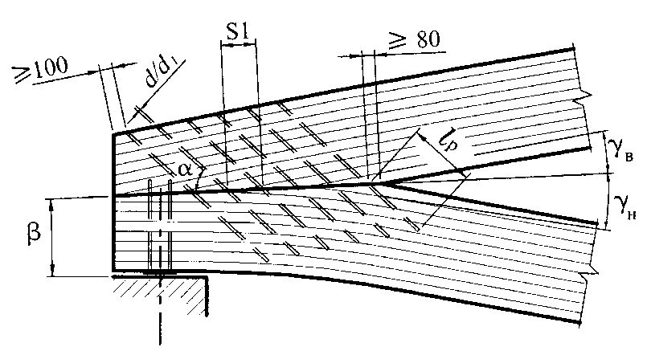
Число вклеенных стержней n
где N с - усилие сдвига по плоскости сплачивания верхнего и нижнего поясов; Т - несущая способность вклеенного стержня (см. 8.41);
- α - угол наклона стержней к плоскости сплачивания, назначаемый в пределах от 30º до 50º; k с.р - коэффициент совместности работы вклеенных связей.
При равномерной расстановке связей k с.р равен 0,8, при расстановке не менее 30 % крайних к опоре связей в виде 2 вклеенных стержней по ширине сечения k с.р равен 0,85.
М.8 Площадку сплачивания верхнего и нижнего поясов следует проверять на смятие под углом γ к волокнам по формуле
где N и Q - продольная и поперечная силы в верхнем поясе в зоне сплачивания;
- β - угол наклона оси верхнего пояса в зоне сплачивания к плоскости сплачивания;
- b - ширина сечения фермы;
- s 1 - шаг вклеенных связей;
- R см,γ - расчетное сопротивление древесины смятию под углом γ к волокнам, определяемое по формуле (5);
- γ - больший из углов наклона плоскости сплачивания к волокнам верхнего и нижнего поясов.
Если условие не выполнено, следует увеличить шаг связей или усилить древесину стержнями, вклеенными перпендикулярно плоскости сплачивания.
Шаг вклеенных стержней усиления s 1 у следует определять с учетом 8.39 по формуле
где Т - несущая способность вклеенного стержня усиления (8.41).
М.9 Сборные фермы могут состоять из нескольких отправочных марок. Расположение укрупнительных узлов следует определять транспортными и технологическими требованиями. В нижнем поясе следует располагать минимально возможное количество стыков.
М.10 Стыки верхнего пояса следует конструировать с передачей осевых усилий на торцы элементов посредством полимербетона, обеспечивающего равномерное распределение напряжений по высоте поперечного сечения.
М.11 Растянутые и сжатые стыки поясов должны быть рассчитаны на монтажные усилия при кантовке и подъеме ферм. Они должны обладать достаточной жесткостью из плоскости и воспринимать усилия обратного знака.
НПриложение Н. Конструкционные меры защиты деревянных конструкций
Н.1 Пример защиты КДК от увлажнения и биоразрушения в местах пересечений ограждающих конструкций (стен, перекрытий, покрытий) представлен на рисунках Н.1, Н.2.
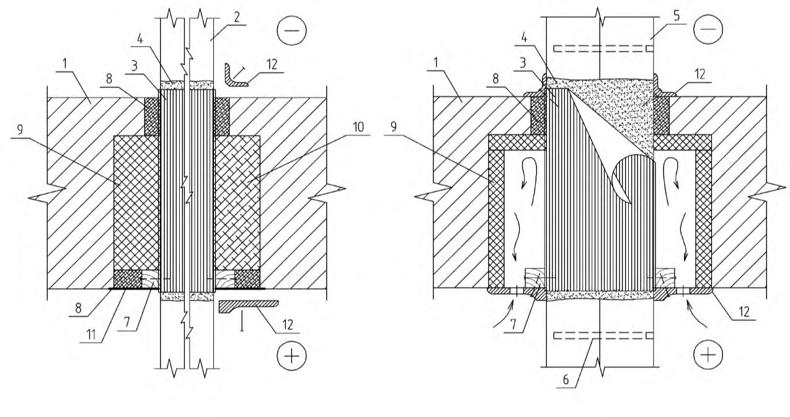
а - с утеплением зазоров плитным утеплителем; б - то же, заливочным пенополиуретаном (ППУ); в - с вентилируемым зазором
1 - наружная стена; 2 - несущая КДК; 3 - влагоизоляционный бандаж; 4 - поверхность, обработанная антисептиком; 5 - спаренная несущая КДК; 6 - вклеенный металлический стержень; 7 - деревянный брусок сечением 40х40 мм; 8 - монтажная пена; 9 - плитный утеплитель; 10 - заливочный ППУ; 11 -самоклеющаяся герметизирующая лента; 12 - нащельник
Рисунок Н.1 - Узлы пересечения несущей КДК наружной стены отапливаемого здания
1 - наружная стена; 2 - спаренная несущая КДК; 3 - вставка; 4 - вклеенный металлический стержень; 5 -поверхность, обработанная антисептиком; 6 - влагоизоляционный бандаж; 7 - монтажная пена; 8 - плитный утеплитель; 9 - нащельник
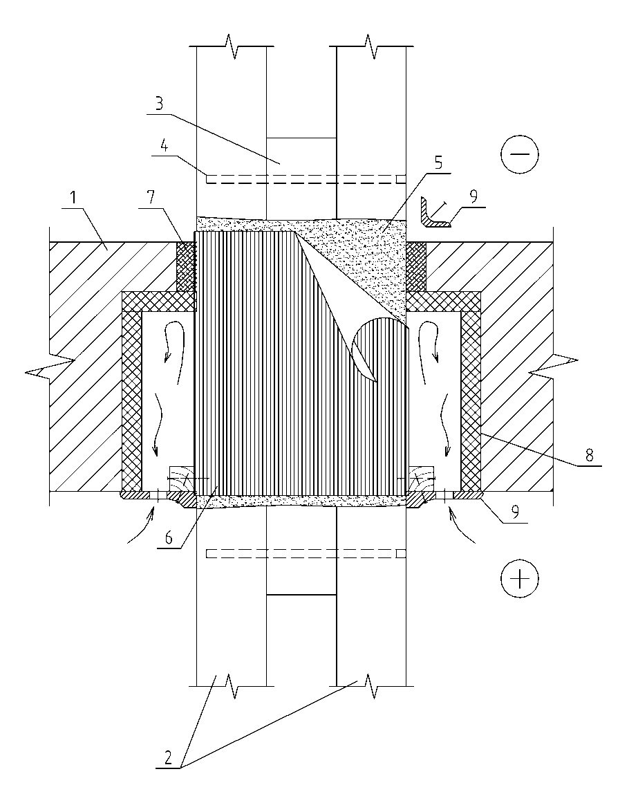
Рисунок Н.2 - Узел (в плане) пересечения несущей КДК спаренного сечения наружной стены отапливаемого здания с вентилируемым зазором
ППриложение П. Параметры шурупов и глухарей
П.1 В настоящем приложении приведены конструкция и размеры шурупов, в том числе глухарей - шурупов с шестигранной головкой (рисунок П.1). а - глухарь; б, в, г - шурупы с полукруглой, потайной и полупотайной головками
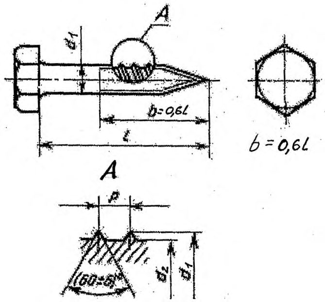
Рисунок П.1 - Балка композитного сечения
П.2 Резьбовую часть шурупов изготовляют цилиндрической или конической, которая должна иметь на конце заостренную часть (буравчик). Для шурупов наружный диаметр резьбы, а с конической резьбовой частью наибольший наружный диаметр резьбы должен быть равен номинальному диаметру шурупа.
П.3 Конструктивные параметры винтов приведены в таблице П.1.
Таблица П.1
| Наружный диаметр резьбы, мм | 3,5 | 4 | 5 | 6 | 8 | 10 | 12 | 16 | 20 |
|---|---|---|---|---|---|---|---|---|---|
| Внутренний диаметр резьбы, мм | 2,4 | 2,8 | 3,5 | 4,2 | 5,6 | 7,0 | 9,0 | 12,0 | 15,0 |
| Шаг резьбы, мм | 1,5 | 1,75 | 2,0 | 2,5 | 3,5 | 4,5 | 5,0 | 6,0 | 7,0 |
Таблица Р.1
| Обозначение | Наименование |
|---|---|
| Усилия от внешних нагрузок и воздействий в поперечном сечении элемента | Усилия от внешних нагрузок и воздействий в поперечном сечении элемента |
| М | Изгибающий момент |
| N | Продольная сила |
| Q | Поперечная сила |
| Характеристики материалов | Характеристики материалов |
| R и | Расчетное сопротивление древесины изгибу вдоль волокон |
| R c | Расчетное сопротивление древесины сжатию вдоль волокон |
| R р | Расчетное сопротивление древесины растяжению вдоль волокон |
| R см | Расчетное сопротивление древесины смятию вдоль волокон |
| R ск | Расчетное сопротивление древесины сдвигу вдоль волокон |
| R с90 | Расчетное сопротивление древесины сжатию поперек волокон |
| R р90 | Расчетное сопротивление древесины растяжению поперек волокон |
| R см90 | Расчетное сопротивление древесины смятию поперек волокон |
| R ср ск | Расчетное сопротивление древесины скалыванию вдоль волокон |
| R ск90 | Расчетное сопротивление древесины сдвигу поперек волокон |
| R см | Расчетное сопротивление древесины смятию под углом к волокнам |
| R ск | Расчетное сопротивление древесины сдвигу под углом к волокнам |
| R ф.р | Расчетное сопротивление фанеры растяжению в плоскости листа |
| R ф.с | Расчетное сопротивление фанеры сжатию в плоскости листа |
| R ф.и | Расчетное сопротивление фанеры изгибу в плоскости листа |
| R ф.ск | Расчетное сопротивление фанеры скалыванию в плоскости листа |
| R ф.ср | Расчетное сопротивление фанеры срезу перпендикулярно плоскости листа |
| R ф.с90 | Расчетное сопротивление фанеры сжатию перпендикулярно плоскости листа |
| R ф.см90 | Расчетное сопротивление фанеры смятию перпендикулярно плоскости листа |
| и д.ш R | Расчетное сопротивление древесины однонаправленного шпона изгибу вдоль волокон |
| c д.ш R | Расчетное сопротивление древесины однонаправленного шпона сжатию вдоль волокон |
| р д.ш R | Расчетное сопротивление древесины однонаправленного шпона растяжению вдоль волокон |
| см д.ш R | Расчетное сопротивление древесины однонаправленного шпона смятию вдоль волокон |
| ск д.ш R | Расчетное сопротивление древесины однонаправленного шпона сдвигу вдоль волокон |
| Е 0 , Е | Модуль упругости древесины и фанеры вдоль волокон |
| Е 90 | Модуль упругости древесины и фанеры поперек волокон |
| Е Ф | Модуль упругости фанеры |
| Е I | Модуль упругости древесины в расчетах несущих конструкций (кроме опор ЛЭП) на устойчивость и по деформированной схеме |
| I E ф | Модуль упругости фанеры в расчетах несущих конструкций (кроме опор ЛЭП) на устойчивость и по деформированной схеме |
| G 0,90 , G | Модуль сдвига древесины относительно осей, направленных вдоль и попрек волокон |
| G Ф | Модуль сдвига фанеры |
РПриложение Р. Основные буквенные обозначения
| I ф G | Модуль сдвига фанеры в расчетах несущих конструкций (кроме опор ЛЭП) на устойчивость и по деформированной схеме |
|---|---|
| v 90.0 | Коэффициент Пуассона древесины поперек волокон при напряжениях, направленных вдоль волокон |
| v 0.90 | Коэффициент Пуассона древесины вдоль волокон при напряжениях, направленных поперек волокон |
| v ф | Коэффициент Пуассона фанеры |
| m | Коэффициент приведения к древесине |
| m а | Коэффициент, учитывающий влияние пропитки антипиренами |
| m б | Коэффициент, учитывающий высоту сечения |
| m в | Коэффициент условий эксплуатации конструкций |
| m гн | Коэффициент, учитывающий радиус кривизны |
| m д | Коэффициент, учитывающий длительную нагрузку |
| m н | Коэффициент, учитывающий время длительности нагрузки |
| m о | Коэффициент, учитывающий ослабления сечения растянутых и изгибаемых элементов |
| m п | Коэффициент перехода для расчетных сопротивлений сосны к соответствующим величинам других пород древесины |
| m сл | Коэффициент, учитывающий толщину слоя |
| m с.с | Коэффициент, учитывающий срок службы |
| m т | Коэффициент температурных условий |
| Т | Расчетная несущая способность связи |
| Геометрические характеристики | Геометрические характеристики |
| F | Площадь поперечного сечения элемента |
| F расч | Расчетная площадь поперечного сечения элемента |
| F нт | Площадь поперечного сечения элемента нетто |
| F бр | Площадь поперечного сечения элемента брутто |
| F см | Расчетная площадь смятия |
| F ск | Расчетная площадь скалывания |
| b | Ширина поперечного сечения |
| d | Номинальный диаметр стержней арматурной стали, анкеров, болтов, гвоздей, шурупов и др. |
| h | Высота поперечного сечения |
| I | Момент инерции поперечного сечения элемента |
| I нт | Момент инерции поперечного сечения элемента нетто |
| I бр | Момент инерции поперечного сечения элемента брутто |
| I пр | Приведенный момент инерции поперечного сечения элемента |
| l | Пролет, длина элемента |
| l 0 | Расчетная длина элемента |
| l см | Длина площадки смятия |
| r | Радиус инерции сечения |
| S | Статический момент поперечного сечения элемента |
| S ′ бр | Статический момент брутто сдвигаемой части поперечного сечения элемента |
| W | Момент сопротивления поперечного сечения элемента |
| W расч | Расчетный момент сопротивления поперечного сечения элемента |
| W пр | Приведенный момент сопротивления поперечного сечения элемента |
| Прочие основные характеристики | Прочие основные характеристики |
| ξ | Коэффициент, учитывающий дополнительный момент от продольной силы вследствие прогиба элемента |
| φ | Коэффициент продольного изгиба |
| λ | Гибкость элемента |
| f | Прогиб элемента |
| n ш | Расчетное число швов в элементе |
|---|---|
| k c | Коэффициент податливости соединений |
Библиография
- [1] Федеральный закон от 22 июня 2008 г. № 123-ФЗ «Технический регламент о требованиях пожарной безопасности»